Curriculum
Version 3.2.3 DE, 1. Oktober 2025, Herausgeber UXQB e. V. Der Text ist wörtlich übernommen; Abbildungen und Tabellen als Bild der Originalseite. Jede Seitenangabe öffnet das PDF an dieser Stelle.
Dieses Dokument beschreibt die prüfungsrelevanten Inhalte der Zertifizierungsprüfung zum „Certified Professional for Usability and User Experience - Advanced Level User Requirements Engineering” (CPUX-UR).
Das Curriculum und die darin definierten Begriffe berücksichtigen alle Themen und Fachbegriffe, die sowohl in der theoretischen Prüfung als auch in den Aufgaben der praktischen Prüfung vorkommen können.
Die Zertifizierung CPUX-F ist keine Voraussetzung für die Teilnahme an der CPUX-UR-Prüfung. Wir empfehlen jedoch dringend, sich vor dem Lesen dieses Lehrplans mit den Begriffen und Konzepten des CPUX-F Lehrplans vertraut zu machen.
Gegenstand der Zertifizierungsprüfung sind ausschließlich Fachbegriffe und Themen, die im Lehrplan und/oder im Glossar beschrieben sind. Ziel der Prüfung ist es, zu bewerten, -
Dieses Dokument umfasst die menschzentrierten Gestaltungsaktivitäten „Verstehen und Festlegen des Nutzungskontextes” und „Festlegen der Nutzungsanforderungen”, die in ISO 9241-210 „Prozess zur Gestaltung gebrauchstauglicher interaktiver Systeme“ festgelegt sind (siehe Abbildung 1).
Dieses Dokument basiert vorrangig auf folgenden Quellen:
1. CPUX-F Curriculum (verfügbar unter http://www.uxqb.org/de/de) 2. DIN EN ISO 9241-210 Prozess zur Gestaltung gebrauchstauglicher interaktiver
Systeme
3. SO/IEC 25063 "Common Industry Format (CIF) for usability: Context of use
description"
4. ISO/IEC 25064 "Common Industry Format (CIF) for usability: User needs report" 5. ISO 25065 “Common Industry Format (CIF) for usability: User requirements
specification”
Weitere verwendete Literaturquellen befinden sich im Anhang 2 – Literatur.
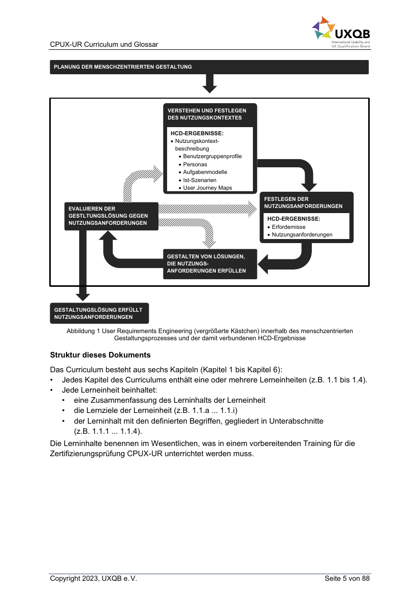
Struktur dieses Dokuments
Das Curriculum besteht aus sechs Kapiteln (Kapitel 1 bis Kapitel 6):
Die Lerninhalte benennen im Wesentlichen, was in einem vorbereitenden Training für die Zertifizierungsprüfung CPUX-UR unterrichtet werden muss.
Was bescheinigt das Zertifikat CPUX-UR?
Das Zertifikat UXQB® Certified Professional for Usability and User Experience – Advanced Level User Requirements Engineering (CPUX-UR, theoretischer Teil) bescheinigt, dass der Zertifikatsinhaber
Das Zertifikat UXQB® Certified Professional for Usability and User Experience – Advanced Level User Requirements Engineering (CPUX-UR) bescheinigt, dass der Zertifikatsinhaber
Die Inhalte der Kapitel 1 bis 6 und die darin enthaltenen Lerneinheiten werden in vorbereitenden Seminaren zum CPUX-UR vermittelt. Der Fokus liegt hierbei sowohl auf dem „Verstehen und praktisch anwenden können“ bereits eingeführter Fachbegriffe und Konzepte aus dem Curriculum CPUX-F als auch auf dem „Kennen, verstehen und praktisch anwenden können“ ergänzender Fachbegriffe und Konzepte.
Anhang 1: Modellseminar enthält einen Zeitplan für ein typisches Seminar, den Trainingsanbieter als Orientierungshilfe bei der Entwicklung ihrer eigenen Seminare verwenden können.
Lernziele und Kompetenzstufen
Jedes Lernziel dieses Lehrplans ist einer Kompetenzstufe (K1, K2, K3) zugeordnet. Die Kompetenzstufe K3 umfasst die Stufe K2, die Kompetenzstufe K2 umfasst die Stufe K1.
Tabelle 1 Kompetenzstufen des CPUX Zertifizierungsmodells listet für jede Kompetenzstufe Möglichkeiten zum Nachweis des Fachwissens auf. listet für jede Kompetenzstufe Möglichkeiten zum Nachweis des Fachwissens auf. Die hierbei verwendeten Verben stimmen mit den Formulierungen in den Lernzielen überein.
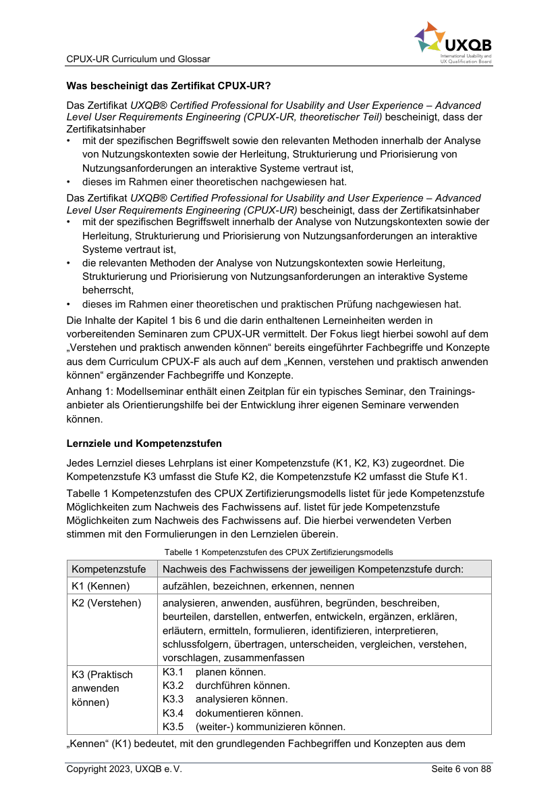
Kompetenzstufe Nachweis des Fachwissens der jeweiligen Kompetenzstufe durch:
K1 (Kennen) aufzählen, bezeichnen, erkennen, nennen
K2 (Verstehen) analysieren, anwenden, ausführen, begründen, beschreiben,
beurteilen, darstellen, entwerfen, entwickeln, ergänzen, erklären, erläutern, ermitteln, formulieren, identifizieren, interpretieren, schlussfolgern, übertragen, unterscheiden, vergleichen, verstehen, vorschlagen, zusammenfassen K3.1 planen können.
K3 (Praktisch
K3.2 durchführen können.
anwenden
K3.3 analysieren können.
können)
K3.4 dokumentieren können. K3.5 (weiter-) kommunizieren können.
„Kennen“ (K1) bedeutet, mit den grundlegenden Fachbegriffen und Konzepten aus dem Fachgebiet Usability und User Experience vertraut zu sein.
“Verstehen” (K2) bedeutet,
“Praktisch anwenden können” (K3) bedeutet Bekanntes und Verstandenes in konkreten Anwendungsfällen erfolgreich umsetzen zu können.
Der Foundation Level (CPUX-F) fokussiert auf K1. Die Advanced Levels (CPUX-UR, CPUX-UT, ...) fokussieren auf K2 und K3.
Die Kompetenzstufe K1 bildet die Basis für die theoretische Prüfung für den Foundation Level (CPUX-F). Die Kompetenzstufe K2 bildet die Basis für die theoretische Prüfung für den Advanced Level (CPUX-UR, CPUX-UT, ...).
Die praktische Prüfung zum Advanced Level CPUX-UR fokussiert auf die Kompetenzstufen K3.1, K3.3 und K3.4.
Zur Klarstellung: Auch wenn zum Beispiel die Kompetenz „durchführen können“ (K3.2) für die erfolgreiche Tätigkeit im Usability Engineering wesentlich ist (z.B. Interviews führen, Beobachtungen durchführen), steht bei der praktischen Prüfung zum CPUX-UR die Kompetenz „analysieren können“ im Vordergrund, da für die Herleitung, Strukturierung und Priorisierung von Nutzungsanforderungen die Analysekompetenz besonders wichtig ist, und die Lerninhalte hierzu nicht expliziter Gegenstand anderer Zertifizierungsverfahren sind.
Dank
Dieses Dokument wurde von folgenden Personen erstellt:
Übersicht über Lerneinheiten, zentrale Fachbegriffe / Konzepte, Methoden und Arbeitsprodukte
Diese Übersicht dient als roter Faden durch das CPUX-UR Curriculum. Sie zeigt zusammengefasst, was jede Lerneinheit beinhaltet (wichtigste Fachbegriffe, Methoden und Arbeitsprodukte). Soweit Veranschaulichungsbeispiele für Arbeitsprodukte im Anhang enthalten sind, werden diese in der rechten Spalte referenziert.
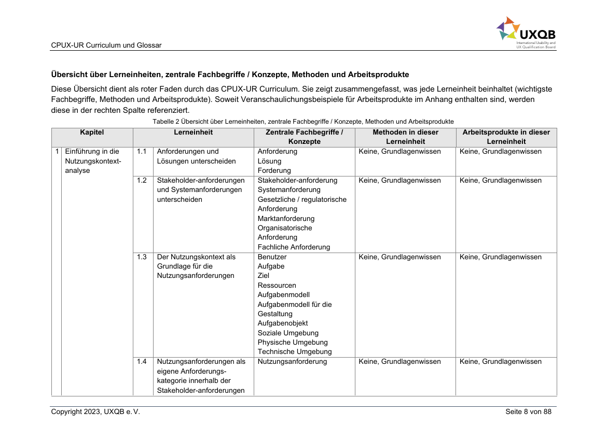
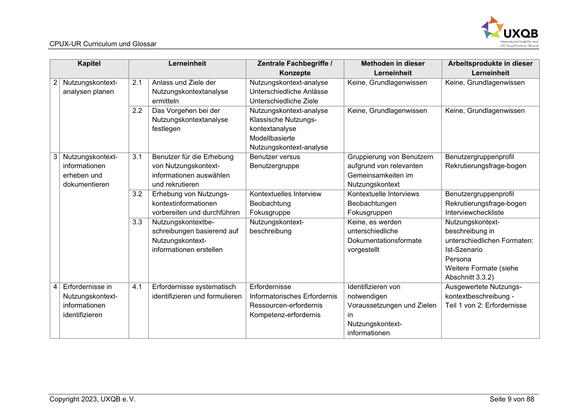
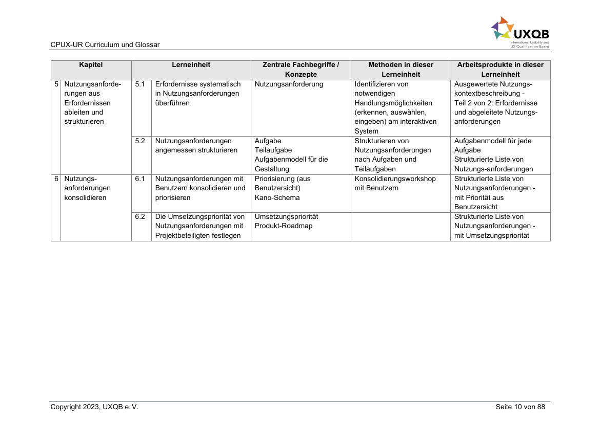
Bei der menschzentrierten Gestaltung von interaktiven Systemen liegt der Fokus auf den Benutzern der interaktiven Systeme und auf anderen Menschen in deren sozialer Umgebung, die von dem interaktiven System betroffen sein können. Die Qualität des interaktiven Systems umfasst die menschzentrierte Qualität und die technische Qualität. Die menschzentrierte Qualität ergibt sich aus der Erfüllung der Anforderungen an die Usability, Barrierefreiheit, User Experience und die Vermeidung von Schäden durch die Benutzung.
Aus der Gestaltung können Risiken für Benutzer und andere Menschen resultieren, beispielsweise wenn Benutzungsfehler negative Folgen für die Gesundheit, die Sicherheit, die Finanzen oder die Umwelt zur Folge haben.
Der Nutzungskontext ist die Basis für das Identifizieren von Erfordernissen, aus denen die Anforderungen hergeleitet werden, die zur Erreichung von menschzentrierter Qualität beitragen. Während Anforderungen immer auf Erfordernissen basieren und die Fähigkeiten des interaktiven Systems spezifizieren, sind Lösungen Attribute von interaktiven Systemen, die implementiert werden, um die Anforderungen zu erfüllen. Anforderungen helfen beim Einkreisen passender Lösungen und beim Verwerfen unpassender Lösungen, um so einen Konsens über Lösungsvorschläge zu erreichen, die auf Fakten und nicht auf Meinungen basieren. Der Lösungsraum muss zum Problemraum passen. Forderungen von Benutzern und anderen Stakeholdern, zum Beispiel Benutzerwünschen müssen analysiert werden, um die zugrundeliegenden Erfordernisse zu identifizieren, damit gültige Nutzungsanforderungen festgelegt werden können. Damit wird sichergestellt, dass die Immunisierungsfalle vermieden wird, um unbegründete Anforderungen und in der Folge ein suboptimales interaktives System zu verhindern. Der Lösungsraum für das interaktive System wird durch kontextspezifische Nutzungsanforderungen und etablierte Gestaltungsrichtlinien sowie konkrete Gestaltungsregeln bestimmt.
Bei der Gestaltung eines interaktiven Systems müssen verschiedene Perspektiven berücksichtigt werden, um die Qualität des Systems sicherzustellen. Insbesondere muss neben der technischen Qualität auch die menschzentrierte Qualität berücksichtigt werden. Die menschzentrierte Gestaltung interaktiver Systeme ist auf die Erzielung von menschzentrierter Qualität fokussiert.
Der Begriff „menschzentrierte Gestaltung” wird statt „benutzerzentrierter Gestaltung” verwendet, um auch die Erfordernisse weiterer Stakeholder einzuschließen, die nicht unbedingt Benutzer sind. Dennoch ist das Feedback der Benutzer im Rahmen von Usability-Evaluierungen die wichtigste Informationsquelle bei der menschzentrierten Gestaltung.
Das Ziel der menschzentrierten Gestaltung besteht darin, interaktive Systeme zu entwickeln, die für die vorgesehenen Benutzer eine angemessene menschzentrierte Qualität haben und dabei zugleich auch andere Personen in deren sozialer Umgebung zu berücksichtigen, die von dem interaktiven System betroffen sind oder betroffen sein können.
Dies schließt gegebenenfalls auch Verpackung, Branding, Benutzerdokumentation, Onlinehilfe, Support und Schulung mit ein.
Der Begriff Qualität spielt bei der Entwicklung interaktiver Systeme eine wichtige Rolle.
Der Begriff Qualität umfasst die Erfüllung der Anforderungen an Usability, Barrierefreiheit, User Experience und die Vermeidung von Schäden durch die Benutzung (menschzentrierte Qualität) sowie die Erfüllung von Systemanforderungen (technische Qualität).
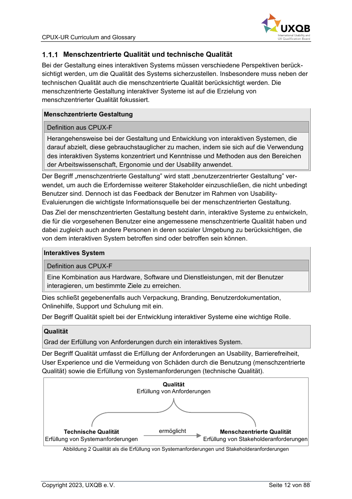
Technische Qualität ist das Ergebnis der Umsetzung von Systemanforderungen.
Technische Qualität umfasst die folgenden Qualitätsdimensionen:
Technische Qualität ist neben menschzentrierter Qualität ein wichtiger Teilaspekt von Qualität.
Die technische Qualität wird von den Benutzern oft als selbstverständlich vorausgesetzt, während die menschzentrierte Qualität von den Benutzern bei ihrer Interaktion mit dem interaktiven System aktiv wahrgenommen wird.
Beispiel: Der Benutzer einer Waschmaschine geht unbewusst davon aus, dass die Wäsche sauber wird (was durch die technische Qualität ermöglicht wird).
Die Vermeidung von Schäden durch die Benutzung ist folgendermaßen definiert:
Die Vermeidung von Schäden durch die Benutzung wird bei der Spezifikation von menschzentrierten Qualitätszielen eines interaktiven Systems berücksichtigt. Siehe hierzu die Beispiele für die Vermeidung von Schäden durch die Benutzung unter „menschzentrierte Qualitätsziele“.
Wenn die Vermeidung von Schäden durch die Benutzung nicht berücksichtigt wird, kann der Benutzer unakzeptablen Risiken ausgesetzt werden.
Schaden ist definiert als physische Verletzung oder Schädigung der Gesundheit von Menschen oder Schädigung von Gütern oder der Umwelt. Es ist wichtig, systematisch zwischen Nutzungskontext, Erfordernissen, Anforderungen und Lösungen zu unterscheiden. Zur Erreichung menschzentrierter Qualität bei der Gestaltung eines interaktiven Systems, muss der Nutzungskontext verstanden und festgelegt werden.
Nutzungskontextinformationen sind faktische Informationen, die im Nutzungskontext erhoben werden. Die Ergebnisse aus Beobachtungen und kontextuellen Interviews werden in Nutzungskontextbeschreibungen dokumentiert.
Der Teilmenge des Nutzungskontexts, der als Basis für die Gestaltung eines interaktiven Systems verwendet wird, wird als Nutzungskontext für die Gestaltung bezeichnet.
Nutzungskontextbeschreibungen sind Quelle für das Identifizieren von Erfordernissen. Somit sind Erfordernisse auf den Nutzungskontext zurückführbar.
Jede Komponente des Nutzungskontexts (Benutzer, Ziele, Aufgaben, Ressourcen, Umgebungen) ist eine potenzielle Quelle für Erfordernisse.
Erfordernisse
Anforderungen helfen bei der Gestaltung geeigneter Lösungen, indem sie festlegen, was mit dem interaktiven System erreicht werden soll.
In kontextuellen Interviews machen die Benutzer möglicherweise Vorschläge für Funktionen oder für die Gestaltung der Benutzungsschnittstelle.
Forderungen werden oftmals als Lösungsvorschlag formuliert, ohne dass der zugrundeliegende Benutzerwunsch angegeben wird. Sie sind oft Beschreibungen von „Features“, die sich Benutzer an einem Produkt wünschen.
Individuell gewünschte Features sind nicht notwendigerweise Lösungen, die für alle Benutzer geeignet sind.
Beispiel 1:
Beispiel 2:
Forderungen
Der Nutzungskontext, in dem die Benutzer ihre Aufgaben mit den vorhandenen Ressourcen in ihrer aktuellen Umgebung erledigen, ist der Problemraum.
Erfordernisse sind Teil des Problemraums. Erfordernisse, die im gegenwärtigen Nutzungskontext nicht erfüllt werden, führen zu Anforderungen an zukünftige Versionen des interaktiven Systems.
Erfordernisse, die zu Anforderungen geführt haben, die in früheren Versionen implementiert wurden und die nun erfüllt sind, müssen in zukünftigen Versionen berücksichtigt werden, um sicherzustellen, dass die aktuell bestehenden Erfordernisse weiterhin erfüllt werden.
Lösungen für bereits realisierte Anforderungen, die sich im Laufe der Zeit ändern, müssen weiterhin den realisierten Anforderungen entsprechen.
Die Nutzungsanforderungen sind Bestandteil des Lösungsraums aus Benutzersicht, da sie in Bezug auf die Nutzung des interaktiven Systems formuliert sind.
Der Lösungsraum kann anhand der zugrundeliegenden Anforderungen eingegrenzt werden, um geeignete Lösungen zu identifizieren.
Manchmal werden Anforderungen faktisch aus der Lösung abgeleitet und nicht aus den Erfordernissen im Nutzungskontext. Dieser methodische Fehler wird als „Immunisierungsfalle” bezeichnet.
Derartig spezifizierte Anforderungen werden als immunisierte Anforderungen bezeichnet.
Beispiel 1 für immunisierte Anforderungen:
Beispiel 2 für immunisierte Anforderungen:
Das systematische Herleiten von Anforderungen auf der Basis von Nutzungskontextinformationen vermeidet die Immunisierungsfalle. Dies ermöglicht den Vergleich von Lösungsalternativen, die die Anforderungen erfüllen.
Anforderungen können generell in Stakeholderanforderungen und Systemanforderungen unterschieden werden. Zu den Interessenvertretern (Stakeholdern) eines interaktiven Systems gehören die Benutzer des interaktiven Systems und alle anderen Menschen, die ein Interesse daran haben und/oder von ihm betroffen sind. Die Benutzer lassen sich in primäre Benutzer, sekundäre Benutzer und indirekte Benutzer unterteilen. Der Sponsor des interaktiven Systems ist ebenfalls ein Stakeholder.
Während die Stakeholderanforderungen die Fähigkeiten des interaktiven Systems aus der Sicht der Stakeholder spezifizieren, beziehen sich die Systemanforderungen auf die Fähigkeiten des technischen Systems zur Erfüllung der Stakeholderanforderungen. Stakeholderanforderungen sind die Basis für Systemanforderungen. Die Anforderungen der Stakeholder können in gesetzliche / regulatorische Anforderungen, Marktanforderungen, organisatorische Anforderungen, fachliche Anforderungen und Nutzungsanforderungen unterteilt werden. Während der Prozess der Verifizierung sicherstellt, dass alle Anforderungen – Stakeholderanforderungen und Systemanforderungen - umgesetzt wurden, stellt der Prozess der Validierung sicher, dass die Stakeholderanforderungen aus Sicht der Stakeholder effektiv umgesetzt wurden. Um die erforderliche menschzentrierte Qualität eines interaktiven Systems zu erreichen, müssen alle relevanten Anforderungen vollständig hergeleitet, umgesetzt und verifiziert werden.
Während dieses Curriculum speziell auf Nutzungsanforderungen fokussiert, konzentriert sich das CPRE-Curriculum (IREB e.V.) auf Anforderungen im Allgemeinen ohne speziellen Fokus auf Nutzungsanforderungen.
An der Gestaltung des interaktiven Systems sind Menschen mit unterschiedlichen Rollen und Interessen beteiligt.
Alle Benutzer sind Interessenvertreter.
Interessenvertreter können Benutzer sein oder nicht. Interessenvertreter gelten nicht als Benutzer, wenn sie zwar von einem interaktiven System betroffen sind, aber nicht mit ihm interagieren oder dessen Daten nutzen.
Beispiele für Interessenvertreter, die keine Benutzer sind:
Es gibt drei Arten von Benutzern:
Primäre und sekundäre Benutzer interagieren mit dem interaktiven System. Die primären Benutzer führen die Aufgaben aus, die das interaktive System in erster Linie unterstützen soll.
Im Gegensatz zu primären Benutzern führen sekundäre Benutzer unterstützende Aufgaben aus.
Beispiele für sekundäre Benutzer:
Während primäre und sekundäre Benutzer direkt mit dem System interagieren, nutzen indirekte Benutzer die Ergebnisse des interaktiven Systems.
Beispiel:
Ein Bankkunde, der einen Kontoauszug in Papierform oder in elektronischer Form erhält oder eine Filiale besucht, ist ein indirekter Benutzer des Computersystems der Bank, das von den Bankangestellten benutzt wird.
Auch Sponsoren sind Interessenvertreter.
Der Sponsor entscheidet über das Budget für Aktivitäten im Zusammenhang mit der menschzentrierten Gestaltung wie z.B. die Erhebung und Dokumentation von Nutzungskontextinformationen oder die Spezifikation von Nutzungsanforderungen.
Jede Stakeholdergruppe stellt Anforderungen an das interaktive System.
Stakeholderanforderungen lassen sich wie folgt klassifizieren:
Stakeholderanforderungen der einen Kategorie können zu weiteren Stakeholderanforderungen in anderen Kategorien führen.
Gesetzliche oder regulatorische Anforderungen legen Verhaltensregeln für Organisationen und Einzelpersonen fest.
Beispiele:
Informationen durch den Menschen anzuwenden (Bildschirmarbeitsverordnung).
Eine Marktanforderung ist eine Anforderung, die für die Kaufentscheidung derjenigen relevant ist, die mit der Beschaffung interaktiver Systeme entweder für eine bestimmte Benutzergruppe oder für die Benutzer selbst befasst sind.
Häufig werden Marktanforderungen auch Kundenanforderungen genannt.
Beispiel:
„Die Website muss mindestens so gut benutzbar sein wie die Websites der beiden stärksten Wettbewerber”.
Organisatorische Anforderungen definieren die Regeln, die Benutzer bei ihrer Arbeit in organisatorischen Prozessen befolgen müssen.
Beispiele:
In der Praxis ist oft der Begriff der „Geschäftsanforderungen“ zu finden:
Fachliche Anforderungen spezifizieren die Attribute eines vollständigen und richtigen Arbeitsergebnisses einer Aufgabe.
Beispiele für Anforderungen hinsichtlich der Arbeitsergebnisse einer Aufgabe:
Systemanforderungen werden aus Stakeholderanforderungen hergeleitet und bilden die Basis für die technische Umsetzung des interaktiven Systems.
Systemanforderungen sind immer aus Stakeholderanforderungen hergeleitet. Systemanforderungen sind (noch) keine technischen Lösungen, sondern spezifizieren die Fähigkeiten der technischen Lösung. Im Gegensatz dazu sind Nutzungsanforderungen die Basis für die Interaktion zwischen Benutzer und interaktivem System (ohne die dafür erforderliche Technologie vorzuschreiben).
Beispiel für eine Systemanforderung, die sich aus einer Nutzungsanforderung ableiten lässt:
Bei der Verifizierung wird festgestellt, ob alle geforderten Stakeholderanforderungen und Systemanforderungen wie spezifiziert umgesetzt wurden. Bei der Validierung wird festgestellt, ob die Stakeholderanforderungen aus Sicht der Stakeholder angemessen umgesetzt wurden.
Die Verifizierung kann angewandt werden, um zu bestätigen, dass alle Stakeholderanforderungen bei der Gestaltung berücksichtigt wurden.
Beispiel:
Eine auf Inspektion basierende Usability-Evaluierung ist eine Verifizierung, wenn dabei explizit die Erfüllung von Inspektionskriterien (Nutzungsanforderungen und/oder Gestaltungsregeln) überprüft wird (z.B. die korrekte Anwendung eines Styleguides).
Die Validierung kann angewandt werden, um zu bestätigen, dass die Lösungen den Stakeholderanforderungen in angemessener Weise entsprechen.
Beispiel:
Ein Usability-Test prüft explizit, ob die Nutzungsanforderungen angemessen umgesetzt wurden und ob die Lösung aus Benutzersicht benutzbar ist.
Es gibt internationale Boards, die sich mit Requirements Engineering befassen. Das UXQB veröffentlicht das Curriculum für CPUX-UR. IREB veröffentlicht das Curriculum für den "Certified Professional for Requirements Engineering" (CPRE).
Während das Zertifikat „Certified Professional for Requirements Engineering“ (CPRE) Systemanforderungen in den Mittelpunkt stellt, stehen beim CPUX-UR die Nutzungsanforderungen im Mittelpunkt.
Die Hauptzielgruppe für das Zertifikat „Certified Professional for Requirements Engineering“ (CPRE) sind Personen, die an der Erarbeitung geeigneter technischer Lösungen beteiligt sind.
Die Hauptzielgruppe für das CPUX-UR-Zertifikat sind Personen, die an der Gestaltung geeigneter Mensch-System-Interaktionen beteiligt sind.
Der Nutzungskontext umfasst die Benutzer des interaktiven Systems, ihre Ziele und Aufgaben, die von ihnen verwendeten Ressourcen und die Umgebung(en), in der sie sich bei der Erledigung ihrer Aufgaben und der Erreichung ihrer Ziele befinden. All diese Bestandteile des Nutzungskontextes können Erfordernisse enthalten, die zu Nutzungsanforderungen führen.
Er bildet die Basis für den Nutzungskontext für die Gestaltung. Der Nutzungskontext für die Gestaltung ist eine Teilmenge des Nutzungskontexts, da typischerweise nicht alle Benutzergruppen und nicht alle Aufgaben im Nutzungskontext vom System unterstützt werden.
Jede Aufgabe, die ein Benutzer erledigt, kann in Teilaufgaben unterteilt werden. Die Unterteilung von Aufgaben führt zu einem Aufgabenmodell. Jede Aufgabe hat ein Aufgabenmodell. Das Aufgabenmodell des gegenwärtigen Nutzungskontextes beschreibt, wie Benutzer Aufgaben erledigen, bevor das neue oder überarbeitete interaktive System verfügbar ist. Das Aufgabenmodell für die Gestaltung ist eine Weiterentwicklung des Aufgabenmodells für den gegenwärtigen Nutzungskontext. Typischerweise unterscheidet es sich vom Aufgabenmodell des gegenwärtigen Nutzungskontexts dadurch, dass es die Tatsache berücksichtigt, dass Aufgaben im Lichte identifizierter Erfordernisse, abgeleiteter Nutzungsanforderungen und neu verfügbarer Technologie optimiert werden können.
Wenn Benutzer Aufgaben ausführen, dann erstellen, ändern oder inspizieren sie im Grunde Aufgabenobjekte. Beim Entwurf von Lösungen sind die Aufgabenobjekte des gegenwärtigen Nutzungskontextes ganz oder teilweise in der Benutzungsschnittstelle des neuen interaktiven Systems enthalten und können zusätzliche Informationen enthalten.
Die vier Komponenten des Nutzungskontextes nach ISO 9241-11 sind:
Das interaktive System selbst ist nicht Teil des Nutzungskontexts. Es wird vielmehr um den Nutzungskontext herum gestaltet.
Benutzer erledigen Aufgaben, um Ziele zu erreichen.
Viele Aufgaben können in Teilaufgaben unterteilt werden. Diese Teilaufgaben werden von dem zukünftigen interaktiven System unterstützt. Für jede Teilaufgabe spezifizieren die Nutzungsanforderungen die erforderliche Interaktion mit dem System, d.h. was der Benutzer erkennen, auswählen oder eingeben können muss.
Teilaufgaben ergeben sich entweder aus der ursprünglichen Aufgabe selbst („sachaufgabeninduziert”) oder aus der für das interaktive System gewählten spezifischen Implementierung („systeminduziert”). Systeminduzierte Teilaufgaben sind typischerweise notwendig, leisten aber keinen Beitrag zum Ziel der Aufgabe.
Beispiele für Aufgaben und Teilaufgaben:
Beabsichtigte Ergebnisse gibt es sowohl bei Aufgaben als auch bei jeder Teilaufgabe innerhalb einer Aufgabe als Teilziele.
Beabsichtigte Ergebnisse sind beobachtbare Bedingungen, nachdem die Aufgabe abgeschlossen ist.
Beispiele für Ziele in Form einer beobachtbaren Bedingung:
Benutzer führen ihre Aufgaben in einer bestimmten Umgebung aus.
Beispiele für physische Bedingungen:
Beispiele für soziale Bedingungen:
Beispiele für technische Bedingungen:
Zu den sozialen Bedingungen gehören auch die organisatorischen Bedingungen:
Beispiele für organisatorische Bedingungen:
Die Benutzer nutzen bei der Ausführung von Aufgaben in der gegebenen Umgebung Ressourcen.
Typische Beispiele von Ressourcen sind Zeit, finanzielle Mittel, physischer und mentaler Aufwand, Hardware, Software und Materialien.
Ressourcen lassen sich unterscheiden in:
Ausrüstung umfasst Hardware, Software und andere physische Gegenstände, die in Verbindung mit dem interaktiven System verwendet werden, während der Benutzer eine bestimmte Aufgabe mit dem interaktiven System erledigt. Mit Ausrüstung ist nicht das interaktive System selbst gemeint.
Benutzergruppen werden gebildet, wenn primäre, sekundäre und indirekte Benutzer als Stakeholder des interaktiven Systems identifiziert werden.
Beispiele:
Benutzergruppen können auch aufgrund von Unterschieden hinsichtlich der Komponenten des Nutzungskontextes identifiziert werden: Merkmale der Benutzer, Einstellungen und Erfahrungen der Benutzer, ihre Aufgaben und Ziele, die physischen und sozialen Bedingungen und die bei der Erledigung der Aufgaben verwendeten Ressourcen.
Beispiele:
Die Aufgabe, die ein Benutzer erledigt, kann in Teilaufgaben unterteilt werden.
Teilaufgaben werden durch das interaktive System unterstützt, damit der Benutzer die Aufgabe effektiver und effizienter erledigen kann. Nicht alle Teilaufgaben können durch das interaktive System unterstützt werden. Teilaufgaben werden unabhängig von der Interaktion mit dem interaktiven System beschrieben.
Teilaufgaben werden als Handlungen oder als Entscheidungen beschrieben, die im Rahmen der Aufgabe zu treffen sind. Sie beschreiben nicht die Interaktion mit dem interaktiven System. Teilaufgaben werden durch das interaktive System in Form von Informationen, Auswahlmöglichkeiten und/oder Eingaben unterstützt.
Beispiel:
Im gegenwärtigen Nutzungskontext können Teilaufgaben identifiziert werden.
Der Zweck eines Aufgabenmodells besteht darin, die Teilaufgaben innerhalb einer Aufgabe in einer sinnvollen Reihenfolge zu beschreiben, einschließlich der kontextuellen Vorbedingung(en) und der beabsichtigten Ergebnisse. Beabsichtigte Ergebnisse werden auch als kontextuelle Nachbedingungen bezeichnet.
Ein Aufgabenmodell des gegenwärtigen Nutzungskontextes beschreibt Aufgaben und Teilaufgaben, wie sie aktuell erledigt werden, während ein Aufgabenmodell für die Gestaltung beschreibt, wie die Aufgabe ausgeführt werden soll, wenn sie mit Unterstützung des neuen oder überarbeiteten interaktiven Systems ausgeführt wird.
Der Lebenszyklus einer Aufgabe besteht typischerweise aus den Phasen:
Die Teilaufgaben finden innerhalb dieser Phasen statt. Einfache Aufgaben durchlaufen möglicherweise nur eine Teilmenge dieser Phasen.
Eine Aufgabe wird immer von einer oder mehreren kontextuellen Vorbedingungen ausgelöst und endet mit einer oder mehreren kontextuellen Nachbedingungen.
Eine zu starke hierarchische Strukturierung auf mehreren Ebenen führt zu unnötiger Komplexität. Um dies zu vermeiden, empfiehlt es sich, bei Teilaufgaben zu prüfen:
Beispiel: Aufgabenmodell des gegenwärtigen Nutzungskontextes
Aufgabe: Die Fenster des Bewohners putzen.
Kontextuelle Vorbedingung: Der Bewohner hält seine Fenster für so schmutzig,
dass er sich nicht traut, Freunde zu Besuch einzuladen.
Beabsichtigtes Ergebnis: Der Bewohner betrachtet seine Fenster als sauber. (kontextuelle Nachbedingung)
Teilaufgaben entlang der Phasen der Aufgabenerledigung:
Planen
Vorbereiten
Durchführen
Ergebnis bewerten
Ergebnis weitergeben
Aufgabenmodelle des gegenwärtigen Nutzungskontextes müssen normalerweise als Aufgabenmodelle für die Gestaltung angepasst werden, indem berücksichtigt wird, wie sie durch das interaktive System unterstützt werden.
bestimmte Benutzergruppe unterstützt).
Die Anpassung von Aufgabenmodellen kann das Löschen, Hinzufügen oder Ändern von Teilaufgaben innerhalb jeder unterstützten Aufgabe umfassen.
Beispiel: Aufgabenmodell für die Gestaltung
Aufgabe: Die Fenster des Bewohners putzen.
Kontextuelle Vorbedingung: Der Bewohner hält seine Fenster für so schmutzig,
dass er sich nicht traut, Freunde einzuladen.
Beabsichtigtes Ergebnis: Der Bewohner betrachtet seine Fenster als sauber. (kontextuelle Nachbedingung)
Teilaufgaben entlang der Phasen der Aufgabenerledigung:
Planen
Vorbereiten
Durchführen
Ergebnis bewerten
Ergebnis weitergeben
Nach der Durchführung einer Aufgabe oder Teilaufgabe können drei verschiedene Formen von beobachtbaren Nachbedingungen vorliegen: a. Der Benutzer hat ein neues Aufgabenobjekt erstellt. b. Der Benutzer hat ein bestehendes Aufgabenobjekt geändert. c. Der Benutzer hat mit Hilfe eines bestehenden Aufgabenobjekts neues Wissen generiert
Beispiele:
Aufgabenobjekte können in Nutzungskontextbeschreibungen identifiziert werden.
Für die effiziente Durchführung von Arbeitsaufgaben müssen die Benutzer die Aufgabenobjekte identifizieren können. Daher müssen die Aufgabenobjekte und ihre Attribute an der Benutzungsschnittstelle dargestellt werden.
Aufgabenobjekte werden teilweise, vollständig oder mit Zusatzinformationen an der Benutzungsschnittstelle des interaktiven Systems repräsentiert.
Beispiele:
Es ist wichtig, den Unterschied zwischen einem "Ist"-Aufgabenobjekt im Nutzungskontext und dem "Soll"-Aufgabenobjekt, das an der Benutzungsschnittstelle dargestellt wird, als Entscheidungsgrundlage für die Gestaltung zu verstehen.
Die Nutzungsanforderungen sind die Basis für die Überführung der "Ist"-Aufgabenobjekte in „Soll“-Aufgabenobjekte für das spätere Design entsprechen. Die "Ist"-Aufgabenobjekte sind möglicherweise unzureichend für die Durchführung von Aufgaben mit dem interaktiven System. Um Effektivität, Effizienz und Zufriedenstellung bei der Nutzung des interaktiven Systems zu gewährleisten, werden die Nutzungsanforderungen zur Spezifikation der „Soll“-Aufgabenobjekte der Benutzungsschnittstelle verwendet.
Beispiele für Aufgabenobjekte (repräsentiert in der Benutzungsschnittstelle):
Der Nutzungskontext für die Gestaltung ist typischerweise eine Teilmenge des gegebenen Nutzungskontextes. Im Rahmen von Projekten ist häufig nur die Gestaltung für bestimmte Aspekte des Nutzungskontextes möglich.
Beispiele für Nutzungskontextinformationen, die für die Gestaltung nicht verwendet werden:
Nutzungsanforderungen sind eine Kategorie von Stakeholderanforderungen. Es gibt zwei Arten von Nutzungsanforderungen. Qualitative Nutzungsanforderungen beziehen sich auf das, was die Benutzer bei der Nutzung des interaktiven Systems erkennen, auswählen oder eingeben können, um eine oder mehrere Aufgaben zu erledigen. Qualitative Nutzungsanforderungen werden aus den im Nutzungskontext identifizierten Erfordernissen abgeleitet. Quantitative Nutzungsanforderungen betreffen das erforderliche Maß an Usability, Barrierefreiheit, User Experience und Vermeidung von Schäden durch die Benutzung, die das interaktive System erfüllen muss. Quantitative Nutzungsanforderungen werden in der Regel von den Stakeholdern als Akzeptanzkriterien festgelegt. In einem Versicherungsunternehmen könnte beispielsweise der Leiter der Schadensabteilung die quantitative Nutzungsanforderung für das System festlegen, dass alle Benutzer in der Lage sein müssen, einen Schadensfall innerhalb von 15 Minuten abzuwickeln.
Die direkte Quelle einer Nutzungsanforderung sind immer ein oder mehrere Erfordernisse. Andere Stakeholderanforderungen können indirekt zu Nutzungsanforderungen führen, und Nutzungsanforderungen können zu anderen Stakeholderanforderungen führen.
Nicht jede Nutzungsanforderung trägt in gleichem Maße zur Usability eines interaktiven Systems bei. So kann die Implementierung einer bestimmten Nutzungsanforderung für die Usability des interaktiven Systems entscheidend sein, während die Implementierung einer anderen Nutzungsanforderung die Usability nur in geringem Maße beeinflusst.
Nutzungsanforderungen bilden die Basis für die Entwicklung der Benutzungsschnittstelle.
Grundsätzlich lassen sich unterscheiden:
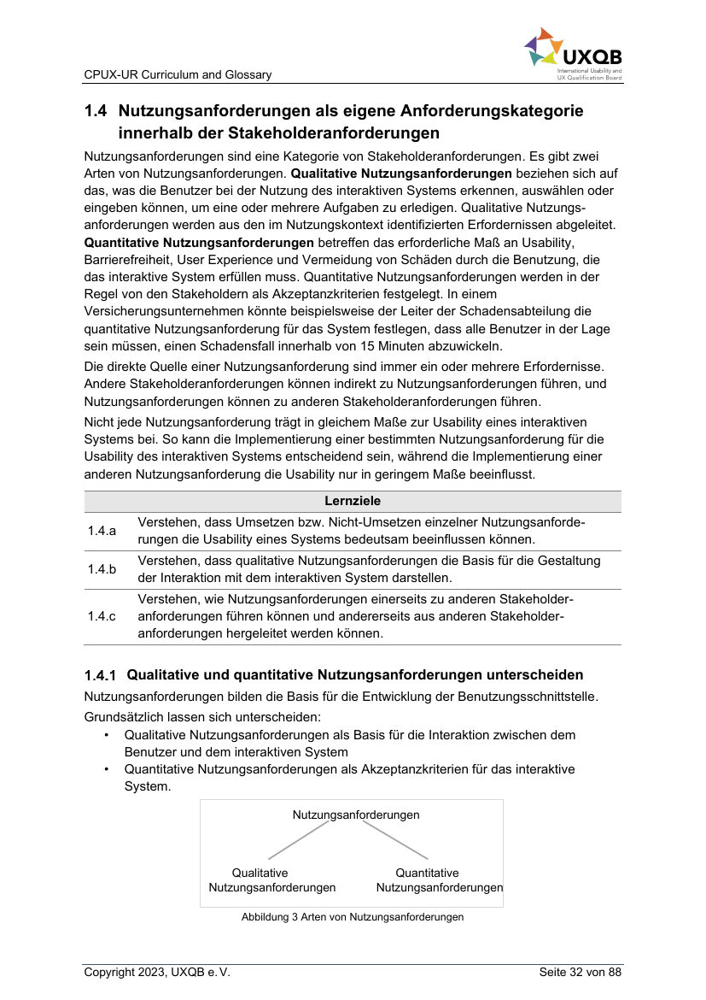
Qualitative Nutzungsanforderungen sind keine Features, sondern die Grundlage für Features. Qualitative Nutzungsanforderungen müssen immer auf die zugrundeliegenden Erfordernisse und zugehörige Nutzungskontextinformation zurückführbar sein. Dies wird als Traceability (Rückverfolgbarkeit) bezeichnet. Vgl. hierzu auch Abschnitt 5.1.2 (Erfordernisse in eine oder mehrere Nutzungsanforderungen überführen ).
Qualitative Nutzungsanforderungen werden mit Hilfe der folgenden Elemente spezifiziert:
Die direkte Quelle einer Nutzungsanforderung sind immer ein oder mehrere Erfordernisse. Indirekte Quellen sind:
Syntaxregeln für das Formulieren von Nutzungsanforderungen und eine Arbeitstechnik für das Ableiten von qualitativen Nutzungsanforderungen aus Erfordernissen befinden sich in Abschnitt 5.1.3 und 5.1.4.
Beispiele für sinnvolle qualitative Nutzungsanforderungen:
Beispiele für falsch formulierte qualitative Nutzungsanforderungen:
Beispiel für eine Lösung, die die Umsetzung einer Nutzungsanforderung repräsentiert:
Beispiele für positive und negative Konsequenzen, wenn Nutzungsanforderungen umgesetzt werden bzw. nicht umgesetzt werden:
Beispiele für organisatorische Anforderungen und fachliche Anforderungen, die sich aus Nutzungsanforderungen ergeben:
Quantitative Nutzungsanforderungen sind Akzeptanzkriterien für die Effektivität, Effizienz und Zufriedenstellung eines interaktiven Systems, z.B. ob Benutzer eine bestimmte Aufgabe mit dem System in einer angemessenen Zeit oder mit einer bestimmten maximalen Anzahl von Benutzungsfehlern lösen können.
Die Elemente einer quantitativen Nutzungsanforderung sind:
Quellen für quantitative Nutzungsanforderungen sind:
Beispiel:
Quantitative Nutzungsanforderungen sollten immer anhand der zugrundeliegenden Erfordernisse verifiziert werden, damit das Maß an Usability nicht willkürlich ist.
Der Nutzungskontext wird analysiert, um Nutzungskontextinformationen zu erheben, die dazu beitragen können, unzureichend verstandene Erfordernisse zu identifizieren. Diese können dann als Grundlage für die Spezifikation von Nutzungsanforderungen verwendet werden. Es gibt verschiedene Situationen, in denen eine Nutzungskontextanalyse durchgeführt wird. Nutzungskontextanalysen können zur Entwicklung eines neuen interaktiven Systems oder zur Verbesserung eines bestehenden interaktiven Systems verwendet werden.
Als Ausgangspunkt für die Planung des Umfangs und des Schwerpunkts einer Nutzungskontextanalyse sollten von den Stakeholdern des Systems menschzentrierte Qualitätsziele festgelegt werden. Dabei handelt es sich um Projektziele aus der Sicht der Benutzer des interaktiven Systems. Zusätzlich zu den Geschäftszielen beschreiben sie, was für die Benutzer des interaktiven Systems in Bezug auf Usability, Barrierefreiheit, User Experience und Vermeidung von Schäden durch die Benutzung erreicht werden muss.
Typische Anlässe zur Durchführung einer Nutzungskontextanalyse im Rahmen eines Projekts zur Entwicklung eines interaktiven Systems, sind:
Zusätzlich zu den Projektzielen sollten zu Projektbeginn auch menschzentrierte Qualitätsziele festgelegt werden.
Menschzentrierte Qualitätsziele
Beispiele: Menschzentrierte Qualitätsziele für Usability:
Menschzentrierte Qualitätsziele für Barrierefreiheit (accessibility):
Menschzentrierte Qualitätsziele für User Experience:
Menschzentrierte Qualitätsziele für das Vermeiden von Schäden durch Nutzung:
Eine Nutzungskontextanalyse ist der Prozess der Planung, Erhebung und Dokumentation authentischer Nutzungskontextinformationen, des Identifizierens darin enthaltener Erfordernisse und der Ableitung von Nutzungsanforderungen aus diesen Erfordernissen.
Grundsätzlich beginnt eine Nutzungskontextanalyse mit dem Sammeln von empirischen Informationen, z.B. Fakten über die Benutzer, ihre Ziele und Aufgaben, die von ihnen verwendeten Ressourcen und die Umgebungen, in denen sie agieren. Empirische Informa- tionen bilden die Grundlage für konstruierte Informationen. Nutzungsanforderungen und Personas sind Beispiele für konstruierte Informationen, die durch Befragung oder Beobachtung von Vertretern einer Benutzergruppe des interaktiven Systems gewonnen werden. In Projekten wird die Nutzungskontextanalyse oft als User Research bezeichnet. Personen, die User Research durchführen, können als User Researcher oder User Experience Researcher bezeichnet werden. User Research umfasst jedoch alle Aktivitäten in einem Projekt oder einer Organisation, die eine direkte Interaktion mit Benutzern beinhalten. Dazu gehören sowohl die Nutzungskontextanalyse, als auch die direkte Zusammenarbeit mit Benutzern bei der Gestaltung und beim Usability Testing. User Research umfasst also weit mehr als die Nutzungskontextanalyse.
Es ist wichtig, den richtigen Fokus für eine Nutzungskontextanalyse zu setzen. Der Fokus einer Nutzungskontextanalyse kann breit oder detailliert sein, je nachdem, welche Informationen über den Nutzungskontext dem Team bereits vorliegen. Wenn das Projektteam wenig Wissen über den Nutzungskontext hat oder die Teammitglieder sich über Aspekte des Nutzungskontexts nicht einig sind, empfiehlt sich eine klassische Nutzungskontext- analyse, bei der keine Annahmen über den Nutzungskontext getroffen werden. Wenn das Projektteam über umfassendes Wissen und/oder Informationen über den Nutzungskontext verfügt, ist eine modellbasierte Nutzungskontextanalyse zu empfehlen, bei der bekannte Informationen zu Aufgabenmodellen und Nutzungsanforderungen vom Projektteam strukturiert und zielgerichtete Fragen zu unbekannten Informationen formuliert werden, die dann für fokussierte Interviews, Beobachtungen und Fokusgruppen verwendet werden.
Eine modellbasierte Nutzungskontextanalyse passt gut zu den Ansätzen Lean UX und Design Thinking.
Bei der Durchführung einer Nutzungskontextanalyse werden Informationen über den Nutzungskontext gesammelt und dokumentiert.
Jedes Erfordernis beruht auf mindestens einer spezifischen Nutzungskontextinformation. Eine einzelne Nutzungskontextinformation ersetzt keine (zusammenhängende) Nutzungskontextbeschreibung.
Beispiel: Bei einer Beobachtung am Flughafen München wurde festgestellt, dass die Mehrheit der am Flughafen ankommenden Passagiere die S-Bahn zum weiteren Transport ab dem Flughafen benutzte und sich nicht sicher ist, welche Fahrkarte für eine regelkonforme Fahrt notwendig ist.
Diese Nutzungskontextinformation ist ein Fragment einer Nutzungskontextbeschreibung, die das Erfordernis enthält „Der angekommene Fluggast muss nach Ankunft einen gültigen Fahrschein für die S-Bahn haben, um sein endgültiges Reiseziel legal zu erreichen.”
Ziel der Nutzungskontextanalyse ist es, empirische Informationen über die Benutzer, ihre Ziele und Aufgaben, die Umgebung, in der sie ihre Aufgaben ausführen, und die von ihnen verwendeten Ressourcen zu erhalten.
Empirische Informationen sind die Grundlage für konstruierte Informationen.
Beispiele für konstruierte Informationen sind Personas, Anforderungen, Prototypen.
Informationen, die nicht auf empirische Informationen zurückgeführt werden können, werden auch als „Annahmen“ bezeichnet. Zum Beispiel könnte es eine Annahme sein, dass Bankangestellte ihren Kunden gerne auch zusätzlich Versicherungen verkaufen. Eine Nutzungskontextanalyse könnte ergeben, dass diese Beutzergruppe sich davor scheut, Versicherungen an Bankkunden zu verkaufen.
Mögliche Vorgehensweisen bei der Nutzungskontextanalyse sind die „klassische Nutzungskontextanalyse” und die „modellbasierte Nutzungskontextanalyse”.
Der Begriff "Nutzungskontextanalyse" wird oft auch als User Research bezeichnet, wobei User Research auch die Evaluierung mit Benutzern umfasst.
Wer Nutzungskontextanalysen durchführt, sollte die Bedeutung des Begriffs User Research kennen, um mit Personen in Projekten, die den Begriff User Research verwenden, kompetent kommunizieren zu können. Nutzungskontextanalyse und die Herleitung von Nutzungsanforderungen sind zentraler Bestandteil von User Research, genauso wie Usability Testing.
Bei Entwicklungsprojekten muss ein Konsens über das Vorgehen in der Nutzungskontextanalyse im Rahmen des Projekts hergestellt werden. Um einen Konsens über das Vorgehen im Projekt zu erzielen, können die folgenden Schritte unternommen werden:
1. Menschzentrierte Qualitätsziele mit den Projektbeteiligten erarbeiten 2. Bekannte Daten und Annahmen über den Nutzungskontext systematisch erheben 3. Wissenslücken und Unsicherheiten über den Nutzungskontext identifizieren 4. Angemessene Fragen für Nutzungskontextanalysen formulieren 5. Personen für Befragungen oder Interviews identifizieren 6. Sich für ein Vorgehen (klassisch versus modellbasiert) entscheiden 7. Ressourcen planen und deren Verfügbarkeit sicherstellen
Das Vorgehen bei der klassischen und der modellbasierten Nutzungskontextanalyse ist unterschiedlich. Beide haben Vor- und Nachteile. Das Projektteam muss entscheiden, welche Vorgehensweise gewählt wird.
Ausgangssituationen für die Durchführung einer klassischen Nutzungskontextanalyse:
Vorgehensweise bei der klassischen Nutzungskontextanalyse: 1. Mit dem Sponsor und anderen Projektbeteiligten Konsens über die Wahl dieses
Vorgehens für das Projekt erzielen
2. Benutzergruppenprofile für jede Benutzergruppe spezifizieren 3. Festlegung der zu klärenden Fragestellungen 4. Kontextuelle Interviews, Beobachtungen und/oder Fokusgruppen durchführen 5. Nutzungskontextdaten dokumentieren, auswerten und strukturieren
Manchmal ist das Projektteam ausreichend über den Nutzungskontext informiert - oder glaubt zumindest, es zu sein. In solchen Fällen ist eine modellbasierte Nutzungskontextanalyse eine gute Wahl, um das Projektteam einzubinden.
Ausgangssituationen für die Durchführung einer modellbasierten Nutzungskontextanalyse:
Vorgehensweise bei der modellbasierten Nutzungskontextanalyse: 1. Identifizieren der Annahmen und des Wissens über den Nutzungskontext 2. Benutzergruppenprofile für jede Benutzergruppe spezifizieren 3. Mit dem Auftraggeber Aufgabenmodelle für jede zu unterstützende Aufgabe konstruieren 4. Nutzungsanforderungen für die jeweilige Aufgabe und deren Teilaufgaben antizipieren 5. Fragestellungen identifizieren, die in einer weiteren Nutzungskontextanalyse zu beant-
worten sind, um Unklarheiten, Lücken und Widersprüche im vorhandenen Wissen über den Nutzungskontext des Projekts zu klären
6. Ggf. kontextuelle Interviews und/oder Beobachtungen und/oder Fokusgruppen
durchführen
7. Nutzungskontextdaten dokumentieren, auswerten und strukturieren
Im Gegensatz zur klassischen Nutzungskontextanalyse werden bei der modellbasierten Nutzungskontextanalyse Interview-Checklisten verwendet, die spezifischere Fragen enthalten, und es wird davon ausgegangen, dass sowohl Aufgabenmodelle als auch Nutzungsanforderungen bis zu einem gewissen Grad bereits bekannt sind. Je mehr empirische Nutzungskontextinformationen bereits im Projektteam vorliegen, umso ökonomischer ist die modellbasierte Nutzungskontextanalyse. Siehe auch Lean UX. Je weniger empirische Nutzungskontextinformationen über den Nutzungskontext bereits im Projektteam vorliegen, umso risikobehafteter ist die modellbasierte Nutzungskontextanalyse insbesondere im Hinblick auf die Immunisierungsfalle.
Nutzungskontextinformationen können den Projektbeteiligten in Form von verschiedenen Dokumentationen über den Nutzungskontext zur Verfügung gestellt werden; siehe hierzu Abschnitt 3.3.
Die Nutzungskontextanalyse ist ein Ansatz innerhalb der menschzentrierten Gestaltung. Andere aktuell diskutierte Ansätze sind „Lean UX” und „Design Thinking”.
Wer Nutzungskontextanalysen durchführt, sollte die Bedeutung des Begriffs Lean UX kennen, um mit Projektbeteiligten kompetent kommunizieren zu können.
Eine modellbasierte Nutzungskontextanalyse ist ein geeigneter Ausgangspunkt für LeanUX:
Neben Lean Startup und agiler Entwicklung ist auch Design Thinking eine Basis für Lean UX, da dessen lösungsorientierte Denkweise auf Grundlage eines umfassenden Verstehens des Problemkontexts den Projektbeteiligten hilft, die Perspektive der Benutzer während der Entwicklungsprozesse einzubeziehen.
Wer Nutzungskontextanalysen durchführt, sollte über Design Thinking Bescheid wissen, um mit Projektbeteiligten kompetent kommunizieren zu können.
Im Mittelpunkt des Design Thinking stehen ein umfassendes und tiefes Verständnis des Problemfeldes und uneingeschränkte Kreativität bei der Erkundung von Lösungsideen, die dann an den Problemkontext angepasst werden.
Bei diesem Ansatz spielen drei Komponenten eine entscheidende Rolle: 1. Menschen: Multidisziplinäre, kollaborierende Teams, die aufgrund ihrer kollektiven
Intelligenz schnell agieren und ihren eigenen effektiven Arbeitsprozess schaffen, um außergewöhnliche Ergebnisse zu erzielen.
2. Orte: Ideen entfalten sich am besten in einer freien und flexiblen Arbeitsumgebung
(variable Projekträume, verschiebbare Tische und Stellwände, viel Platz für Visualisierungen und eine große Auswahl an Materialien um Ideen, Gedanken oder Arbeitsergebnisse zu veranschaulichen).
3. Prozess: Das Team navigiert in einer offenen Fehlerkultur im Lösungsraum und
durchläuft dabei einen iterativen, sechsstufigen Designprozess (Verstehen, Beobachten, Sichtweise definieren, Ideenfindung, Prototyping, Test).
Design Thinking ist ein spezifischer Ansatz zur Erarbeitung von kreativen Lösungen. Dieses Vorgehen berücksichtigt jedoch Nutzungsanforderungen nur implizit. Sie werden weder explizit formuliert noch für eine spätere Verwendung dokumentiert.
Um valide empirische Informationen über den Nutzungskontext zu sammeln, ist es wichtig, Personen zu befragen und/oder zu beobachten, die authentische Repräsentanten der beabsichtigten Benutzergruppe(n) des interaktiven Systems sind. Benutzergruppenprofile spezifizieren die Attribute der Benutzer innerhalb der jeweiligen Benutzergruppen. Wenn das interaktive System für eine bestimmte Organisation entwickelt wird und auf die Benutzer direkt zugegriffen werden kann, ist das Benutzergruppenprofil ausreichend, um Benutzer für kontextuelle Interviews, Beobachtungen und/oder Fokusgruppen zu rekrutieren. Handelt es sich bei dem interaktiven System um ein kommerzielles, handelsübliches Produkt oder eine Software, die organisationsübergreifend eingesetzt werden soll, müssen Benutzer rekrutiert werden, die die dem Projektteam normalerweise nicht bekannt sind. In diesen Fällen muss auf der Basis von Benutzergruppenprofilen ein Fragebogen erstellt werden, mit dem potenzielle Teilnehmer für kontextuelle Interviews, Beobachtungen und/oder Fokusgruppen überprüft werden können, um sicherzustellen, dass alle Teilnehmer zu der/den vorgesehenen Benutzergruppe/n gehören. Dieser Fragebogen wird als Rekrutierungsfragebogen (engl. recruitment screener) bezeichnet.
Valide Nutzungskontextinformationen können nur durch Befragung und/oder Beobachtung bestehender oder potenzieller Benutzer des interaktiven Systems gewonnen werden. Zu diesem Zweck müssen die Benutzergruppen des interaktiven Systems bekannt sein.
Die Merkmale von Benutzergruppen werden in Benutzergruppenprofilen dokumentiert, die zur Rekrutierung von Benutzern für die Teilnahme an einer Nutzungskontextanalyse oder einer Evaluierung des interaktiven Systems verwendet werden können.
Benutzergruppenprofile beschreiben die relevanten Merkmale, Fähigkeiten und Einstellungen der zukünftigen Benutzer des interaktiven Systems, das entworfen oder evaluiert wird. Es gibt kein festgelegtes Format oder Inhalt für ein Benutzergruppenprofil. Benutzergruppen können nach Merkmalen, Fähigkeiten, Einstellungen, den von ihnen ausgeführten Aufgaben, den bei der Ausführung der Aufgaben verwendeten Ressourcen und ihren physischen, sozialen und technischen Umgebungen unterschieden werden.
Auf der Grundlage des Benutzergruppenprofils kann ein Rekrutierungsfragebogen erstellt werden, um sicherzustellen, dass die Teilnehmer an kontextuellen Interviews, Beobachtungen oder Fokusgruppen zum Benutzergruppenprofil passen.
Ein Rekrutierungsfragebogen wird während der Rekrutierung von Teilnehmern benutzt, um festzustellen, ob die Kandidaten dem Benutzergruppenprofil entsprechen.
Je nach Projektsituation unterscheidet sich das Vorgehen bei der Rekrutierung von Benutzern.
a) Vorgehen bei kundenspezifischen Entwicklungsprojekten für eine einzelne Organisation:
1. Benutzergruppenprofile mit Organisationskundigen identifizieren 2. Benutzer mit Führungskräften in der Organisation auswählen
b) Vorgehen bei Entwicklungen eines Herstellers für Benutzer als Arbeitnehmer in
Kundenorganisationen: 1. Benutzergruppenprofile für die einzelnen Benutzergruppen erstellen 2. Für jede Benutzergruppe einen Rekrutierungsfragebogen erstellen 3. Potenzielle Benutzer in potenziellen Kundenorganisationen identifizieren (ggf. in
Zusammenarbeit mit einer Agentur)
4. Die potenziellen Benutzer anhand des Rekrutierungsfragebogens verifizieren 5. Die verifizierten Benutzer zu kontextuellen Interviews, Beobachtungen und/oder
Fokusgruppen rekrutieren und einladen
c) Vorgehen bei Entwicklungsprojekten für Benutzer als direkte Käufer des interaktiven
Systems: 1. Benutzergruppenprofile erstellen 2. Für jede Benutzergruppe einen Rekrutierungsfragebogen erstellen 3. Potenzielle Benutzer identifizieren (ggf. in Zusammenarbeit mit einer Agentur) 4. Die potenziellen Benutzer anhand des Rekrutierungsfragebogens verifizieren 5. Die verifizierten Benutzer zu kontextuellen Interviews, Beobachtungen und/oder
Fokusgruppen rekrutieren und einladen
Empirische Nutzungskontextinformationen werden in kontextuellen Interviews, Beobachtungen oder Fokusgruppen gesammelt. In der Regel arbeiten dabei ein Moderator und ein Protokollant als Team an der Datenerhebung. Unabhängig von der gewählten Methode sollte der Moderator das Meister-Schüler-Modell anwenden.
Kontextuelle Interviews werden verwendet, um ein umfassendes Verständnis der Komponenten eines Nutzungskontextes und ihrer Wechselbeziehungen zu erlangen. Beobachtungen werden eingesetzt, um ein Verständnis für spezifische Aspekte der Aufgabenerledigung zu erlangen. Fokusgruppen werden typischerweise für spezifische Themen innerhalb des Nutzungskontextes eingesetzt, wenn ein tiefes Verständnis der Perspektiven verschiedener Benutzergruppen benötigt wird.
Soweit möglich, sollten die Interviews in der physischen Umgebung stattfinden, in der die Teilnehmer normalerweise die Aufgaben ausführen, die durch das interaktive System unterstützt werden sollen. Dies wird als kontextuelles Interview bezeichnet. Der Moderator verwendet eine Interviewcheckliste mit den Fragen, die geklärt werden müssen. Die Fragen sind offen und neutral, um die Validität der empirischen Informationen zu maximieren. Geschlossene Fragen sollten nur selten verwendet und Suggestivfragen gänzlich vermieden werden.
Bei einer Beobachtung werden die Benutzer in der physischen Umgebung beobachtet, in der sie ihre Aufgaben ausführen. Die Beobachtungen werden dokumentiert. Der Beobachter unterbricht normalerweise nicht, außer wenn er eine klärende Frage stellen muss.
Eine besondere Art der Beobachtung ist die sog. „Cultural Probe”, bei der die Benutzer Proben bzw. Belege ihrer eigenen Situation als Teil ihrer Nutzungskontextinformationen liefern. Bei diesen Belegen kann es sich um Fotos, Notizen, Skizzen oder andere „Proben“ (Spuren) handeln. Diese Methode kann angewendet werden, wenn eine direkte Beobachtung aus Sicherheitsgründen oder aus wirtschaftlichen Gründen nicht möglich ist, oder wenn längere Zeiträume beobachtet werden müssen. Eine weitere spezifische Art der Beobachtung ist die Tagebuchstudie(„Diary study“), bei der die Benutzer Nutzungskontextinformationen liefern, indem sie in bestimmten Zeitabständen, z.B. einmal pro Tag, über einen bestimmten Zeitraum hinweg einen standardisierten Fragebogen ausfüllen.
Bei einer Fokusgruppe wird eine Gruppe von Repräsentanten einer oder mehrerer Benutzergruppen von einem Moderator durch eine Diskussion geführt, in deren Verlauf die Teilnehmer durch vordefinierte Fragen dazu angeregt werden, Informationen zu bestimmten Themen aus ihrem Nutzungskontext zu geben.
Bei der Durchführung von Interviews oder der Moderation von Fokusgruppen ist es wichtig, sich bewusst zu machen, dass Menschen ihren Nutzungskontext auf der Grundlage ihrer persönlichen Erfahrungen oder ihres mentalen Modells beschreiben, d.h. ihrer Wahrnehmung von sich selbst, anderen, der Umgebung und den Dingen, mit denen sie interagieren.
Vor allem in Interviews und Fokusgruppen äußern die Benutzer zusätzlich zu den Nutzungskontextinformationen auch Benutzerwünsche. Benutzerwünsche sind typischerweise keine Nutzungskontextinformationen, Erfordernisse oder Nutzungsanforderungen, sondern von Benutzern gewünschte Lösungen. Solche Benutzerwünsche können zu Nutzungsanforderungen führen, falls im zugrundeliegenden Nutzungskontext Erfordernisse identifiziert werden können.
Bei der Erhebung empirischer qualitativer Informationen sollten Interviewer, Beobachter und Moderatoren eine bestimmte Haltung gegenüber den Teilnehmern einnehmen, die im Meister-Schüler-Modell beschrieben ist.
Bei der Erhebung von qualitativen Daten gilt Folgendes:
Typischerweise verwendete Methoden zur Erhebung von Nutzungskontextinformationen sind:
Die Kriterien für die Auswahl oder Kombination von Methoden hängen von den Fragen ab, die im Rahmen der Nutzungskontextanalyse beantwortet werden sollen:
Die Selbstbeobachtung der Benutzer ist eine besondere Art der Beobachtung.
Eine „Cultural Probe” als eine Art der Selbstbeobachtung zur Erfassung von Informationen ist besonders dann nützlich, wenn eine Beobachtung der Benutzer nicht praktikabel ist.
Eine weitere Form der Selbstbeobachtung der Benutzer ist die Tagebuchstudie („Diary study“).
Tagebuchstudien eignen sich besonders für die Beobachtung des Benutzerverhaltens im Nutzungskontext über einen längeren Zeitraum. Sie sind besonders nützlich, wenn das Verhalten sporadisch oder ungeplant auftritt, wenn Handlungen im Verlauf der Zeit stattfinden oder wenn eine klassische Beobachtung das Benutzerverhalten beeinflussen könnte. Sie können auch dabei helfen zu verstehen, was die Benutzer zum Handeln motiviert. Die Teilnehmer können gebeten werden, in bestimmten Abständen Einträge zu machen, z.B. in bestimmten Zeitabständen (zweimal pro Woche, einmal pro Tag), oder wenn sie vom Moderator kontaktiert und dazu aufgefordert werden, oder immer bei bestimmten Ereignissen (wenn die Kinder von der Schule zurückkommen, wenn sich das Wetter ändert).
Im Rahmen der Nutzungskontextanalyse sollte ein Moderator, der dem Projekt gegenüber neutral ist, die Teilnehmer befragen oder beobachten oder Fokusgruppen durchführen.
Im Englischen wird „Facilitator“ oft als Synonym für „Moderator“ verwendet.
Häufig wird der Moderator von einem Protokollanten begleitet, der sich auf die Aussagen der Benutzer oder auf die Beobachtungen konzentriert und diese notiert.
Der Einsatz eines zusätzlichen Protokollanten erlaubt dem Moderator, sich voll auf die Durchführung des kontextuellen Interviews, der Beobachtung oder der Fokusgruppe zu konzentrieren.
Dieser Abschnitt beschreibt den typischen Ablauf, typische Fehler und Empfehlungen für kontextuelle Interviews. Interviews und kontextuelle Interviews sind Gespräche zwischen einem Moderator und einem Benutzer über den Nutzungskontext. Ein kontextuelles Interview findet in der physischen Umgebung statt, in der die Benutzer ihre Aufgaben ausführen.
Der Zweck eines (kontextuellen) Interviews ist es, ein tiefes Verständnis des Nutzungskontextes (Benutzer, Ziele, Aufgaben, Umgebungen, Ressourcen) zu erlangen, um die Erfordernisse im Nutzungskontext vollständig zu identifizieren. Dieses Verständnis muss unabhängig von der aktuell verwendeten Lösung gewonnen werden.
Die Kombination aus „Kontextuelles Interview“ und „Beobachtung“ wird auf Englisch oft als „contextual inquiry“ bezeichnet.
In Interviews sind offene Fragen zu bevorzugen, da sie die Benutzer dazu anregen, statt kurzer Antworten auf Fragen umfassende Informationen zu geben.
Im Gegensatz zu offenen Fragen ermutigen geschlossene Fragen den Teilnehmer nicht, gesprächig zu sein.
Interviewer sollten geschlossene Fragen vermeiden. Sie halten die Benutzer davon ab, ihre persönlichen Erfahrungen zu erläutern und liefern wenig detaillierte Informationen über den Nutzungskontext.
Beispiele für geschlossene Fragen:
Fragen sollten offen und neutral sein.
Beispiele für neutrale und offene Interviewfragen:
Im Gegensatz zu neutralen Fragen beeinflussen Suggestivfragen die Benutzer in der Richtung ihrer Antwort.
Beispiel für eine Suggestivfrage: „Hätten Sie gerne schöne Farben auf der Homepage der neuen Autovermietungs-Website?”
Entsprechende neutrale Frage: „Wie sollte die Homepage der neuen Autovermietungs-Website aussehen?” Hinweis: bei der neutralen Frage Farbe nicht einmal erwähnt.
Interviewfragen sollten:
Typischerweise werden die Fragen für ein Interview im Voraus ausgearbeitet und in einer Interviewcheckliste aufgeführt. Der Interviewer verwendet die Interviewcheckliste, um sicherzustellen, dass alle relevanten Fragen gestellt werden.
In einem Interview führt der Interviewer üblicherweise ein Briefing durch und stellt dann dem Benutzer Fragen zu typischen Abläufen, die für das geplante interaktive System relevant sind. Das Identifizieren von Erfordernissen und das anschließende Ableiten von Nutzungsanforderungen erfordert eine qualitative Analyse der Informationen, die im Interview erhoben wurden.
Typisches Vorgehen bei der Planung, Vorbereitung, Durchführung und Dokumentation von Interviews:
Planen: 1. Stakeholder, die relevant für die Akzeptanz und Weiterverarbeitung der Ergebnisse des
kontextuellen Interviews sind (z.B. Produkt Manager und Sponsoren) identifizieren
2. Stakeholder zur gemeinsamen Vorbereitung der kontextuellen Interviews einladen 3. Für jede zu befragende Benutzergruppe ein Benutzergruppenprofil zusammen mit
Stakeholdern erstellen.
4. Für jede zu befragende Benutzergruppe Interviewfragen für die Interviewcheckliste
zusammen mit Stakeholdern entwickeln.
5. Soweit die interviewten Personen nicht im eigenen Haus arbeiten und extern rekrutiert
werden müssen, einen Rekrutierungsfragebogen entwickeln, der sicherstellt, dass die Interviewteilnehmer tatsächlich Repräsentanten einer wichtigen Benutzergruppe sind.
6. Identifizierte Interviewteilnehmer zum vereinbarten Zeitpunkt für die vereinbarte Dauer
am Arbeitsplatz aufsuchen. Die vereinbarte Dauer kann stark variieren. So kann ein kontextuelles Interview zum Thema „Frühstückseier kochen“ 15 Minuten dauern, während ein kontextuelles Interview zum Thema „Unbezahlte Rechnungen verfolgen” 90 Minuten dauern kann).
7. Wenn möglich, zwei Personen für das Interview einplanen (ein Interviewer, ein
Protokollant).
Vorbereiten: 1. Den jeweiligen Interviewteilnehmer über Inhalt und Ziele des Interviews aufklären. Inhalt
ist das Sammeln von authentischen Informationen über den Nutzungskontext, Ziel ist das anschließende Herleiten von Nutzungsanforderungen.
2. Anonymität in Bezug auf Person und Arbeitgeber bei der Dokumentation zusichern.
Durchführen: 1. Sich (als Interviewer) und den Protokollanten vorstellen. 2. Das kontextuelle Interview unter Zuhilfenahme der Fragen der Interviewcheckliste
durchführen.
3. Bei jeder Ausführung des Interviewteilnehmers, die nicht verstanden wurde, das bisher
Gesagte mit eigenen Worten wiedergeben („paraphrasieren“) und Rückfragen stellen:
Verlässt der Interviewpartner die Kontextebene und macht Lösungsvorschläge, diese schildern lassen und dann zurückfragen, in welchem Kontext diese gebraucht werden und sich diesen Kontext genau schildern lassen. Verlässt der Interviewpartner die Kontextebene und schildert Nutzungsprobleme mit interaktiven Systemen, diese schildern lassen und dann zurückfragen, in welchem Kontext diese Probleme auftreten, und sich diesen Kontext genau schildern lassen.
4. Alle Ausführungen des Interviewteilnehmers protokollieren. 5. Am Ende des Interviews den Interviewteilnehmer fragen, welche Inhalte er jenseits der
gestellten Fragen noch besprechen möchte und diese Inhalte protokollieren.
6. Das Interview beenden und ggf. (nach dem ersten Interview) Austausch zwischen
Protokollant und Interviewer mit dem Ziel, die weiteren Interviews zu optimieren.
Dokumentieren: 1. Die protokollierten Ausführungen des Interviewteilnehmers als zusammenhängenden
Text (Ist-Szenario) aufschreiben, damit die Stakeholder ein umfassendes Bild über den Nutzungskontext des Interviewteilnehmers erhalten, das keine Rückfragen aufwirft.
2. Das Ist-Szenario kann entlang der gestellten Leitfragen strukturiert werden. Dies hilft den
Stakeholdern, die Aussagen der verschiedenen Interviews später miteinander zu vergleichen. Die Nutzungskontextbeschreibung kann auch unabhängig von den Leitfragen strukturiert werden.
Gütekriterien für die Durchführung kontextueller Interviews:
Ein kontextuelles Interview fällt in die Kategorie der "halbstrukturierten" Interviews, weil das Interview zu einem Gespräch führt, das auf einer Liste von vordefinierten Fragen basiert.
Falls erforderlich, kann die Interviewcheckliste nach der Durchführung eines Interviews auf der Grundlage der Erkenntnisse, die möglicherweise zu zusätzlichen Fragen geführt haben, überarbeitet werden, damit diese in nachfolgenden Interviews berücksichtigt werden können.
Typische Fehler bei kontextuellen Interviews:
Meister-Schüler-Modell nicht.
Dieser Abschnitt beschreibt verschiedene Formen von Beobachtungen, den typischen Ablauf einer Beobachtung, typische Fehler, sowie Empfehlungen für die Durchführung von Beobachtungen.
Die Beobachtung sollte in einem möglichst natürlichen Kontext stattfinden, z. B. am Arbeitsplatz des Benutzers. Der Beobachter greift nicht ein, außer wenn die Notwendigkeit zu einer klärenden Frage besteht.
Wenn kein interaktives System benutzt wird, sollten die bestehenden manuellen Abläufe beobachtet werden.
Es gibt unterschiedliche Formen von Beobachtungen:
Typisches Vorgehen bei der Planung, Vorbereitung, Durchführung und Dokumentation von Beobachtungen:
Planen: 1. Stakeholder identifizieren, die für die Akzeptanz und Weiterverarbeitung der Ergebnisse
der Beobachtung relevant sind (z.B. Produkt Manager und Sponsoren).
2. Stakeholder zur gemeinsamen Vorbereitung der Beobachtung einladen. 3. Für jede zu beobachtende Benutzergruppe ein Benutzergruppenprofil zusammen mit
Stakeholdern erstellen.
4. Für jede zu beobachtende Benutzergruppe klären, bei welchen Aufgaben diese
beobachtet werden sollen und welche Fragen sich den Stakeholdern hierbei stellen.
5. Soweit die zu beobachtenden Personen nicht im eigenen Haus arbeiten und extern
rekrutiert werden müssen, einen Rekrutierungsfragebogen entwickeln, der sicherstellt, dass die zu beobachtenden Personen tatsächlich Repräsentanten einer wichtigen Benutzergruppe sind.
6. Wenn möglich, zwei Personen für die Beobachtung einplanen (ein Beobachter, ein
Protokollant).
Vorbereiten: 1. Die zu beobachtende(n) Person(en) zum vereinbarten Zeitpunkt für die vereinbarte
Dauer (90 – 120 Minuten) am Ort der Beobachtung aufsuchen.
2. Die jeweilige zu beobachtende Person über Inhalt und Ziele der Beobachtung aufklären
(Inhalt = authentische Informationen über den Nutzungskontext, insbesondere den tatsächlichen Ablauf von Aufgaben, Ziel = Anschließende Herleitung von Nutzungsanforderungen).
3. Sich von der zu beobachtenden Person schildern lassen,
welche Aufgaben diese insgesamt durchführt mit wem sie hierbei jeweils zusammenarbeitet welches Ergebnis bei jeder Aufgabe erzielt wird.
4. Die Aufgaben benennen, die beobachtet werden sollen. 5. Anonymität in Bezug auf Person und Arbeitgeber bei der Dokumentation zusichern. 6. Schriftliche Einwilligung der zu beobachtenden Personen zur Erfassung der
beobachteten Informationen einholen.
Durchführen: 1. Sich (als Beobachter) und den Protokollanten vorstellen. 2. Die Person bitten, die Bezeichnung der Aufgabe zu nennen, die als nächste ausgeführt
wird.
3. Die Person bei der Erledigung der Aufgabe beobachten. 4. Alle Beobachtungen und Aussagen stichwortartig protokollieren, sodass im Anschluss ein
zusammenhängender Text erstellt werden kann.
5. Bei jeder Unklarheit in der Beobachtung Rückfragen stellen. 6. Die Beobachtung beenden. 7. Der beobachteten Person für die Mitarbeit und Unterstützung danken.
Dokumentieren:
Gütekriterien für die Durchführung von Beobachtungen:
Beobachtungssituation an sich, der Person des Beobachters und allen sonstigen Einflüssen.
Typische Fehler / Probleme beim Vorgehen:
Beobachtungen sollten von gebrieften Beobachtern durchgeführt werden.
Beobachter dürfen nicht aktiv in die beobachtete Aktivität eingreifen (außer bei teilnehmender Beobachtung). Sie können aber aktiv in die Analyse der Ergebnisse involviert sein.
Dieser Abschnitt beschreibt den typischen Ablauf, typische Fehler und Empfehlungen für die Durchführung von Fokusgruppen.
Die Ergebnisse von Fokusgruppen müssen wie Nutzungskontextinformationen behandelt werden und im Anschluss auf enthaltende Erfordernisse und ableitbare Nutzungsanforderungen hin analysiert. Die Durchführung von Fokusgruppen ist besonders sinnvoll, wenn:
Die moderierte Diskussion mit Fokussierung auf ein bestimmtes Thema oder eine bestimmte Fragestellung führt zu einer intensiven Auseinandersetzung der Teilnehmer mit der Thematik und kann wertvolle Einsichten und Erkenntnisse zutage fördern.
Eine Fokusgruppe ist als qualitative Methode eine aufwändige Methode, die nicht nur eine gute Vorbereitung und eine professionelle Durchführung erfordert, sondern darüber hinaus auch eine genaue Protokollierung sowie eine zeitaufwändige Auswertung (z.B. Erarbeitung von Affinity-Diagrammen).
Typisches Vorgehen bei der Planung, Vorbereitung, Durchführung und Dokumentation von Fokusgruppen:
Planen: 1. Stakeholder identifizieren, die für die Akzeptanz und Weiterverarbeitung der Ergebnisse
der Fokusgruppe relevant sind (z.B. Produkt Manager und Sponsoren).
2. Stakeholder zur gemeinsamen Vorbereitung der Fokusgruppe einladen. 3. Den Zielgegenstand (z.B. eine Produktidee oder ein interessierendes Thema) und das
Ziel, das mit der Fokusgruppe erreicht werden soll (z.B. „Wie sieht der Kontext der Benutzergruppe(n) rund um die Produktidee tatsächlich aus?“ oder „Verstehen, was alles zum Thema Heizen gehört“), klar formulieren.
4. Für jede beteiligte Benutzergruppe ein Benutzergruppenprofil zusammen mit Stake-
holdern erstellen.
5. Für jede beteiligte Benutzergruppe klären, welche offenen Fragen sich am besten als
Ausgangspunkt für die Diskussion eignen.
6. Soweit die Teilnehmer der Fokusgruppe nicht im eigenen Haus arbeiten und extern
rekrutiert werden müssen, einen Rekrutierungsfragebogen entwickeln, der sicherstellt, dass die Teilnehmer tatsächlich Repräsentanten einer wichtigen Benutzergruppe sind.
7. Die teilnehmenden Personen zum vorgesehenen Zeitpunkt und für die vorgesehene
Zeitdauer (90 bis 240 Minuten) einladen.
8. Wenn möglich, zwei Personen für die Moderation einplanen (ein Moderator, ein
Protokollant).
Vorbereiten:
Durchführen: 1. Sich (als Moderator) und den Protokollanten vorstellen. 2. Den Teilnehmern das Ziel der Fokusgruppe und das Vorgehen erläutern. 3. Anonymität in Bezug auf Person(en) und Arbeitgeber bei der Dokumentation der
Fokusgruppe zusichern.
4. Verhaltensregeln für die Interaktion der Teilnehmer untereinander und mit dem
Moderator benennen. (z.B. Bitte um Handzeichen vor Wortbeitrag).
5. Das zu diskutierende Thema präsentieren. 6. Die Fragen entlang eines Moderationsleitfadens stellen. 7. Die Diskussion unter den Teilnehmern anregen. 8. Äußerungen von Teilnehmern in einem kurzen vollständigen Satz zusammenfassen und
gemeinsam mit allen Teilnehmern besprechen.
9. Alle Äußerungen aller Teilnehmer protokollieren. 10. Nachdem alle Fragestellungen erörtert wurden, sich bei den Teilnehmern bedanken und
die Fokusgruppe beenden.
Dokumentieren: 1. Alle Aussagen einem Thema oder einer Fragestellung der Fokusgruppe zuordnen. 2. Handlungsempfehlungen aufgrund der Aussagen der Teilnehmer formulieren. 3. Ggf. Erkenntnisse in Nutzungskontextbeschreibungen aufnehmen.
Gütekriterien für die Durchführung von Fokusgruppen:
Typische Fehler bei der Durchführung von Fokusgruppen:
Kontextuelle Interviews, Beobachtungen und Fokusgruppen geben Einblick in das mentale Modell des Benutzers.
Ein mentales Modell wird oft auch als der Denkprozess einer Person darüber, wie etwas in der realen Welt funktioniert, beschrieben.
Menschen formen mentale Modelle durch ihre Erfahrungen mit interaktiven Systemen, Training und Anleitung. Das mentale Modell eines interaktiven Systems wird weitgehend durch die Interpretation der wahrgenommenen Aktionen und sichtbaren Struktur dieses interaktiven Systems geprägt. Auch Erwartungen, die aus der Nutzung anderer oder ähnlicher Systeme resultieren, sind hierbei von Bedeutung.
Wenn das subjektive mentale Modell des Benutzers über ein interaktives System unvollständig oder widersprüchlich ist, kann der Benutzer das interaktive System nicht problemlos nutzen. Offengelegte mentale Modelle sind wichtige Informationsquellen für die Ermittlung von Erfordernissen.
Beispiel:
Die Benutzer einer Spülmaschine im Büro gehen immer davon aus, dass diese bereits von jemandem ausgeräumt wurde und stellen ihr schmutziges Geschirr in den Geschirrspüler, ohne sich vorher zu vergewissern, ob der Geschirrspüler geleert wurde.
Erfordernis: Büroangestellte müssen wissen, ob das Geschirr im Geschirrspüler des Büros sauber oder schmutzig ist, damit sauberes und schmutziges Geschirr nicht vermischt wird.
Zur Erfassung mentaler Modelle in kontextuellen Interviews kann das „teaching-back“ Verfahren verwendet werden: Die interviewte Person wird gebeten, dem Interviewer die Art und Weise der Aufgabenerledigung mit Hilfe des interaktiven Systems sowie die Bedienung und Funktionsweise des Systems zu erklären. „Teaching-back“ und Paraphrasieren sind Techniken, die im Rahmen kontextueller Interviews nach dem Meister-Schüler-Modell angewendet werden können.
In einem kontextuellen Interview können die Benutzer Wünsche äußern. Interviewer sollten diese Wünsche hinterfragen, anstatt voreilige Schlussfolgerungen zu ziehen oder Interpretationen zu konstruieren. Benutzerwünsche können im Rahmen der Nutzungskontextanalyse gesammelt werden. Für die Akzeptanz von Lösungen ist es durchaus wichtig, dass die Benutzerwünsche berücksichtigt werden. Sie sollten in Form von Lösungsvorschlägen dokumentiert werden, zusammen mit den Nutzungsanforderungen, für die die Benutzerwünsche Lösungsmöglichkeiten darstellen können. Allerdings dürfen die Benutzerwünsche nicht der Ausgangspunkt für die Entwicklung einer Lösung sein.
Benutzerwünsche werden von Benutzern in kontextuellen Interviews geäußert, wohingegen Erfordernisse typischerweise implizit sind und nur durch die Analyse von Nutzungskontextinformationen und Problembeschreibungen durch den User Requirements Engineer identifiziert werden.
Benutzerwünsche können sich auf psychologische Bedürfnisse beziehen, die für die Produktgestaltung relevant sind. Daher können psychologische Bedürfnisse durch die Untersuchung von Benutzerwünschen in kontextuellen Interviews ermittelt werden. Die psychologischen Bedürfnisse sind in der nachfolgenden Tabelle 3 Psychologische Bedürfnisse aufgeführt.
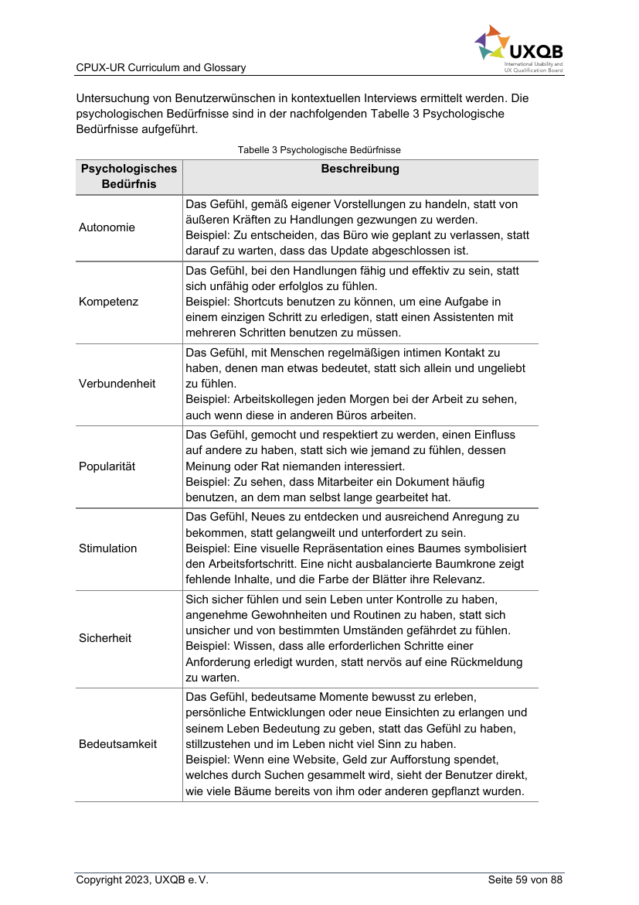
Psychologisches Beschreibung
Bedürfnis
Das Gefühl, gemäß eigener Vorstellungen zu handeln, statt von äußeren Kräften zu Handlungen gezwungen zu werden.
Autonomie
Beispiel: Zu entscheiden, das Büro wie geplant zu verlassen, statt darauf zu warten, dass das Update abgeschlossen ist.
Das Gefühl, bei den Handlungen fähig und effektiv zu sein, statt sich unfähig oder erfolglos zu fühlen.
Kompetenz Beispiel: Shortcuts benutzen zu können, um eine Aufgabe in
einem einzigen Schritt zu erledigen, statt einen Assistenten mit mehreren Schritten benutzen zu müssen.
Das Gefühl, mit Menschen regelmäßigen intimen Kontakt zu haben, denen man etwas bedeutet, statt sich allein und ungeliebt
Verbundenheit zu fühlen.
Beispiel: Arbeitskollegen jeden Morgen bei der Arbeit zu sehen, auch wenn diese in anderen Büros arbeiten.
Das Gefühl, gemocht und respektiert zu werden, einen Einfluss auf andere zu haben, statt sich wie jemand zu fühlen, dessen
Popularität Meinung oder Rat niemanden interessiert.
Beispiel: Zu sehen, dass Mitarbeiter ein Dokument häufig benutzen, an dem man selbst lange gearbeitet hat.
Das Gefühl, Neues zu entdecken und ausreichend Anregung zu bekommen, statt gelangweilt und unterfordert zu sein.
Stimulation Beispiel: Eine visuelle Repräsentation eines Baumes symbolisiert
den Arbeitsfortschritt. Eine nicht ausbalancierte Baumkrone zeigt fehlende Inhalte, und die Farbe der Blätter ihre Relevanz.
Sich sicher fühlen und sein Leben unter Kontrolle zu haben, angenehme Gewohnheiten und Routinen zu haben, statt sich unsicher und von bestimmten Umständen gefährdet zu fühlen.
Sicherheit
Beispiel: Wissen, dass alle erforderlichen Schritte einer Anforderung erledigt wurden, statt nervös auf eine Rückmeldung zu warten.
Das Gefühl, bedeutsame Momente bewusst zu erleben, persönliche Entwicklungen oder neue Einsichten zu erlangen und seinem Leben Bedeutung zu geben, statt das Gefühl zu haben,
Bedeutsamkeit stillzustehen und im Leben nicht viel Sinn zu haben.
Beispiel: Wenn eine Website, Geld zur Aufforstung spendet, welches durch Suchen gesammelt wird, sieht der Benutzer direkt, wie viele Bäume bereits von ihm oder anderen gepflanzt wurden.
Eine Nutzungskontextbeschreibung dient verschiedenen Zwecken, zum einen der Information der Beteiligten und der Schaffung von Bewusstsein und Empathie für den Problemraum der Benutzer des interaktiven Systems, zum anderen dem Identifizieren von Erfordernissen und der Ableitung von Nutzungsanforderungen für das interaktive System.
Es gibt verschiedene Arten von Nutzungskontextbeschreibungen. Zu Projektbeginn wird als Ausgangspunkt eine zusammenfassende Nutzungskontextbeschreibung erstellt, in der die verschiedenen Benutzergruppen, die Aufgaben, die sie zur Erreichung ihrer Ziele ausführen, die von ihnen verwendeten Ressourcen und ihre Umgebung(en) aufgelistet sind.
Zusammenfassende Nutzungskontextbeschreibungen
Detaillierte Nutzungskontextbeschreibungen
Übliche Formen von narrativen Nutzungskontextbeschreibungen sind Personas und Ist- Szenarien. Während Personas vor allem dazu dienen, Empathie für eine Benutzergruppe zu schaffen, eignen sich Ist-Szenarien zum Identifizieren von Erfordernissen und systematischen Ableiten von Nutzungsanforderungen. Ist-Szenarien spiegeln den Nutzungskontext aus der Perspektive einer Benutzergruppe wider und beschreiben in narrativer Form umfassend die Aufgaben und Ziele, die Zusammenhänge zwischen Aufgaben, Ressourcen sowie der sozialen und physischen Umgebung.
Der Hauptunterschied zwischen einem Ist-Szenario und einem Nutzungsszenario besteht darin, dass sich Ist-Szenarien auf die Beschreibung der Komponenten des aktuellen Nutzungskontexts konzentrieren, während sich Nutzungsszenarien auf die beabsichtigte Nutzungssituation des zu entwickelnden interaktiven Systems konzentrieren.
Ein Nutzungsszenario ist also keine Nutzungskontextbeschreibung, weil es die angestrebte Nutzungssituation des zu entwickelnden interaktiven Systems beschreibt. Es ist eine Beschreibung des Nutzungskontextes für die Gestaltung und damit ein erster textueller Prototyp des zu entwickelnden Systems.
Modellhafte Nutzungskontextbeschreibungen liefern strukturelle Darstellungen des Nutzungskontextes. Zu den üblichen Formen gehören User Journey Maps, Affinity- Diagramme und Zielkataloge. Während modellhafte Nutzungskontextbeschreibungen die effiziente Kommunikation von Aspekten des Nutzungskontexts innerhalb des Projektteams unterstützen, erzählen Ist-Szenarien die ganze Geschichte und sind somit die primäre Quelle für das Identifizieren von Erfordernissen.
Interviews, Beobachtungen und Fokusgruppen liefern gewöhnlich umfangreiche Informationen über den Nutzungskontext. Nutzungskontextbeschreibungen dienen dazu, Nutzungskontextinformationen zu erfassen und so die Kommunikation mit den Projektbeteiligten zu erleichtern.
Es gibt zwei unterschiedliche Arten: die zusammenfassende und die detaillierte Nutzungskontextbeschreibung.
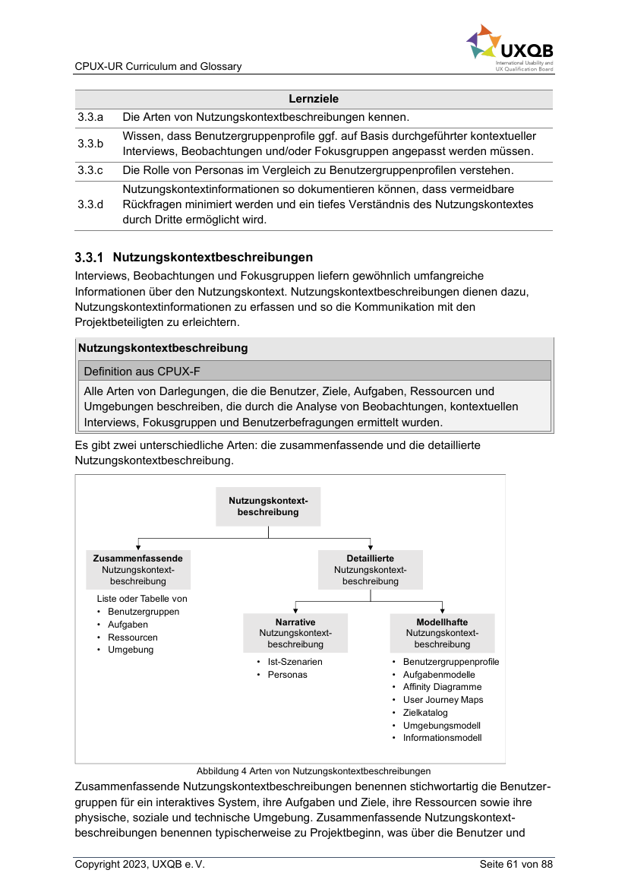
Zusammenfassende Nutzungskontextbeschreibungen benennen stichwortartig die Benutzergruppen für ein interaktives System, ihre Aufgaben und Ziele, ihre Ressourcen sowie ihre physische, soziale und technische Umgebung. Zusammenfassende Nutzungskontextbeschreibungen benennen typischerweise zu Projektbeginn, was über die Benutzer und deren Aufgaben bekannt ist (ohne, dass Nutzungskontextanalysen durchgeführt wurden). Sie bilden typischerweise den Ausgangspunkt für eine modellbasierte Nutzungskontextanalyse.
Zusammenfassende Nutzungskontextbeschreibungen sind besonders hilfreich bei der Planung von Nutzungskontextanalysen. Sie sind kein Ersatz für detaillierte Nutzungskontextbeschreibungen. Nach erfolgter Nutzungskontextanalyse können zusammenfassende Nutzungskontextbeschreibungen entsprechend angepasst zur zusammenfassenden Kommunikation der Ergebnisse an die Projektbeteiligten verwendet werden.
Eine detaillierte Nutzungskontextbeschreibung ist eine zusammenhängende Beschreibung der Benutzer, ihrer Ziele und Aufgaben, Ressourcen sowie ihrer physischen, sozialen und technischen Umgebung, Detaillierte Nutzungskontextbeschreibungen werden typischerweise in Form von narrativen Beschreibungen dokumentiert, aus denen dann modellhafte Beschreibungen abgeleitet werden.
Beschreibungsformen zur Dokumentation von Nutzungskontexten sind:
1. Narrative Beschreibungen
2. Modellhafte Beschreibungen
Sonstige modellhafte Beschreibungen (in diesem Dokument nicht näher erläutert):
Detaillierte Nutzungskontextbeschreibungen sollen Personen, die nicht bei kontextuellen Interviews oder Beobachtungen anwesend waren, ein umfassendes Bild über den Nutzungskontext geben. Detaillierte Nutzungskontextbeschreibungen ermöglichen das gezielte Identifizieren von Erfordernissen und Ableiten von Nutzungsanforderungen.
Modellhafte Beschreibungen eignen sich vorrangig für die Kommunikation von Nutzungskontextinformationen im Projektteam und an Stakeholder bzw. zum Identifizieren fehlender oder unvollständiger Nutzungskontextinformationen.
Der Begriff "narrativ" bezieht sich auf dokumentierte Nutzungskontextinformationen, die explizit eine auf der Realität basierende Geschichte in Form eines zusammenhängenden Textes erzählen.
Ist-Szenarien beschreiben vorrangig die Komponenten des gegebenen Nutzungskontexts im Zusammenspiel. Ist-Szenarien machen in der Beschreibung des Verhaltens eines Benutzers Probleme im vorliegenden Nutzungskontext deutlich, die die effiziente Erledigung seiner Aufgaben beeinträchtigen.
Beispiel:
John Miller ist Vielflieger, der mehrmals in der Woche auf Geschäftsreise geht. Er zieht es vor, mit dem Auto zum Flughafen zu fahren, aber hin und wieder verpasst er einen Flug und bereut dann, nicht mit dem Taxi oder mit der Bahn zum Flughafen gefahren zu sein. Heute ist es wieder passiert: „Ich unterschätze einfach immer wieder den Zeitaufwand für diese langen Warteschlangen an der Einfahrt zum Parkhaus und den langen Fußweg zum Gate.”
Während das Ist-Szenario den gegenwärtigen Nutzungskontext mit all seinen Komponenten (Benutzer, Aufgaben, Ziele, Ressourcen und Umgebung [sozial, physisch und technisch]) in narrativer Form beschreibt, präsentiert die Persona-Beschreibung die Eigenschaften, Einstellungen und Ziele einer Benutzergruppe in narrativer Form.
Personas sind keine Beschreibungen existierender Personen, sondern repräsentieren echte Benutzer auf der Basis empirisch ermittelter Daten, zum Beispiel aus Beobachtungen oder kontextuellen Interviews.
Eine Persona Beschreibung
Es gibt zwei Arten von Personas: primäre und sekundäre Personas. Während primäre Personas die Hauptzielgruppen repräsentieren, liefern sekundäre Personas Einblicke in weitere Ziele oder Eigenschaften, die darüber hinaus bei der Herleitung von Nutzungsanforderungen ebenfalls relevant sind, die primäre Persona-Beschreibung aber überlasten würden. Zum Beispiel ist eine sekundäre Persona für einen Wecker ein leichter Schläfer, während die primäre Persona ihren Wecker häufig verschläft.
Personas, die auf Annahmen beruhen, werden Proto-Personas genannt (siehe Lean UX). Sie können als Ausgangspunkt für eine modellbasierte Nutzungskontextanalyse verwendet werden. Sogenannte Anti-Personas können zur Darstellung von Benutzern verwendet werden, für die das interaktive System ausdrücklich nicht vorgesehen ist. Zum Beispiel ist ein Tresorknacker eine Anti-Persona für einen Banksafe, und seine Eigenschaften würden zu Anforderungen an den Banksafe führen. Eine Person, die es routinemäßig vermeidet, die Parkgebühr zu bezahlen, ist eine Anti-Persona für einen kostenpflichtigen Parkplatz, und ihre Eigenschaften könnten zu Anforderungen an das interaktive System führen, das für den Zugriff auf den Parkplatz verwendet wird.
Gütekriterien für die Entwicklung von Personas:
„Modellhaft” bezieht sich auf dokumentierte Nutzungskontextinformationen, deren Struktur eindeutig erkennbar ist, d. h. in Form von Listen, Tabellen, Diagrammen und anderen Formen strukturierter Visualisierungen.
Zusammenfassende Nutzungskontextbeschreibungen, Benutzergruppenprofile und Aufgabenmodelle sind modellhafte Nutzungskontextbeschreibungen, die an anderer Stelle in diesem Dokument beschrieben sind.
User Journey Maps können auch als Kommunikationsmittel genutzt werden, um den Stakeholdern den vorhandenen Nutzungskontext in kompakter Form zu vermitteln.
User Journey Maps gehen über die eigentliche Nutzung eines Produktes hinaus und reichen beispielsweise von der Entdeckung des Produkts über den Kauf bis hin zur späteren Nutzung des Produkts. Dabei werden alle Berührungspunkte berücksichtigt, einschließlich des ersten Kontakts des Benutzers mit dem interaktiven System (z.B. "Wie habe ich von diesem neuen interaktiven Dienst erfahren?"), der direkten aufgabenbezogenen Interaktion und der Kommunikation der User Experience an Dritte (z.B. Bericht an Kollegen über die Erfahrungen der Benutzer mit dem neuen System). User Journey Maps sind kein Ersatz für Ist-Szenarien oder Nutzungsszenarien.
Affinity-Diagramme sind ein geeignetes Mittel, um Informationen zu strukturieren und Erkenntnisse auf verschiedenen Ebenen zu gewinnen, wenn große Mengen an qualitativen Nutzungskontextinformationen analysiert werden müssen.
Gruppen sortiert, denen jeweils eine Überschrift zugewiesen wird.
Ideen oder Aussagen werden zunächst auf Karten notiert („Affinity-Notes“) und anschließend in mehreren Iterationen in hierarchisch organisierte Gruppen sortiert. Jede Gruppe von Elementen oder jede Gruppe von Gruppen erhält eine passende Überschrift.
Affinity-Diagramme werden idealerweise kollaborativ erzeugt – Umgruppieren ist erlaubt. Durch Verwendung von Farben kann die Struktur (Ebenen: Ziele, Themen, Zusammenhänge zwischen Inhalten) besser visualisiert werden.
Wer sich mit Nutzungskontextinformationen befasst, erfährt eine Menge über die Ziele der Benutzer. Diese können strukturiert und in einem Zielkatalog aufgelistet werden.
Erfordernisse sind in Nutzungskontextbeschreibungen enthalten, auch wenn sie in den meisten Fällen nicht explizit aufgeführt sind. Die Analyse einer Nutzungskontextbeschreibung zeigt Erfordernisse auf, die die Grundlage für spätere Nutzungsanforderungen bilden. Die identifizierten Erfordernisse werden im gegenwärtigen Nutzungskontext nicht unbedingt befriedigt. Die liefern also eine rationale Grundlage für die Gestaltung des interaktiven Systems.
Es gibt drei Arten von Erfordernissen:
Es ist wichtig, dass bei der Formulierung von Erfordernissen einheitliche Formulierungen verwendet werden, um sicherzustellen, dass diese klar sind und gut kommuniziert werden können.
Erfordernisse beinhalten immer eine detaillierte Beschreibung des beabsichtigten Ergebnisses und der Voraussetzungen (Informationen, Ressourcen oder Kompetenzen), die erforderlich sind, um dieses Arbeitsergebnis zu erzielen.
Um die Erfordernisse der Benutzer zielgerichtet zu identifizieren, müssen die Nutzungskontextinformationen analysiert werden, um das beabsichtigte Ergebnis und die dafür erforderlichen Voraussetzungen zu ermitteln.
Erfordernisse lassen sich unterscheiden in, informatorische Erfordernisse, Ressourcenerfordernisse und Kompetenzerfordernisse.
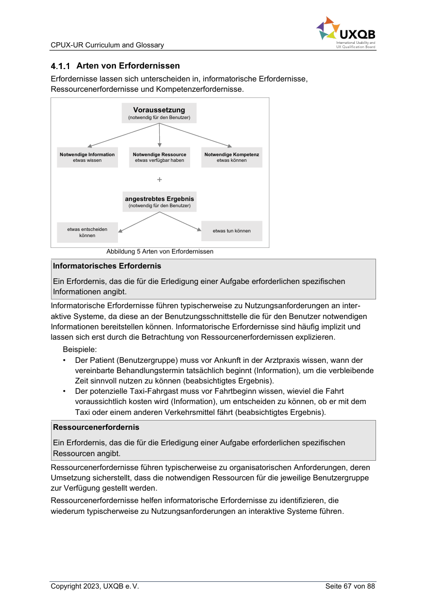
Informatorische Erfordernisse führen typischerweise zu Nutzungsanforderungen an interaktive Systeme, da diese an der Benutzungsschnittstelle die für den Benutzer notwendigen Informationen bereitstellen können. Informatorische Erfordernisse sind häufig implizit und lassen sich erst durch die Betrachtung von Ressourcenerfordernissen explizieren.
Beispiele:
Ressourcenerfordernisse führen typischerweise zu organisatorischen Anforderungen, deren Umsetzung sicherstellt, dass die notwendigen Ressourcen für die jeweilige Benutzergruppe zur Verfügung gestellt werden.
Ressourcenerfordernisse helfen informatorische Erfordernisse zu identifizieren, die wiederum typischerweise zu Nutzungsanforderungen an interaktive Systeme führen.
Beispiele:
Kompetenzerfordernisse führen typischerweise zu organisatorischen Anforderungen, deren Umsetzung sicherstellt, dass notwendige Kompetenzen für die jeweilige Benutzergruppe verfügbar sind.
Beispiele:
Beim Identifizieren von Erfordernissen müssen bestimmte Qualitätskriterien erfüllt werden:
Erfordernisse
Das (zu entwickelnde oder zu evaluierende) interaktive System kommt nicht im Erfordernis vor.
Die folgenden Syntaxregeln helfen bei der korrekten Formulierung von Erfordernissen.
Informatorisches Erfordernis: Die <Benutzergruppe> muss <Information> wissen, um <Entscheidung treffen> oder <Handlung ausführen> zu können.
Beispiele:
Ressourcenerfordernis: Die <Benutzergruppe> muss <Ressource> verfügbar haben, um <Entscheidung treffen> oder <Handlung ausführen> zu können.
Beispiele:
Kompetenzerfordernis: Die <Benutzergruppe> muss <Kompetenz/Fähigkeit> haben, um <Entscheidung treffen>oder <Handlung ausführen> zu können.
Beispiel:
Die folgenden Beispiele entsprechen weder den oben genannten Formulierungsregeln noch den Qualitätskriterien für Erfordernisse. Sie zeigen häufig verwendete Formulierungen, die
Beispiel 1 für ein schlecht formuliertes Erfordernis:
Der Fahrgast muss in der Lage sein, eine Fahrkarte am Fahrkartenautomaten zu kaufen, um eine Geldstrafe zu vermeiden.
Dieses Beispiel wiederholt die Aufgabe des Benutzers, die der Fahrkartenautomat unterstützen muss, und ist daher zu allgemein.
Ein Beispiel, wie diese Aussage umformuliert werden kann: Der Fahrgast muss wissen, welche Fahrkarte für ein bestimmtes Ziel gültig ist, damit er den Zug benutzen kann, ohne bei einer Fahrkartenkontrolle Probleme zu bekommen.
Beispiel 2 für ein schlecht formuliertes Erfordernis:
Der Autofahrer muss eine Möglichkeit haben, den Druck der einzelnen Reifen zu messen, um sicher fahren zu können.
Das Beispiel weist auf eine Lösung hin, anstatt die benötigten Informationen oder Ressourcen zu nennen.
Ein Beispiel, wie diese Aussage umformuliert werden kann: Der Autofahrer muss wissen, ob der Druck eines jeden Reifens zu hoch oder zu niedrig ist, damit er ihn anpassen kann.
Die folgende Herangehensweise in zwei Schritten ist für das Identifizieren von Erfordernissen in Nutzungskontextinformationen geeignet:
1. Die einzelnen beabsichtigten Ergebnisse in den Nutzungskontextinformationen
identifizieren.
2. Die Voraussetzungen identifizieren, die für die einzelnen beabsichtigten Ergebnisse
erforderlich sind.
Jede Nutzungskontextinformation kann ein oder mehrere Erfordernisse enthalten. Es empfiehlt sich daher, Nutzungskontextbeschreibungen Satz für Satz durchzugehen und mit den folgenden Leitfragen Erfordernisse zu identifizieren:
Tabelle 4 zeigt beispielhaft, wie aus einzelnen Nutzungskontextinformationen Erfordernisse identifiziert werden.
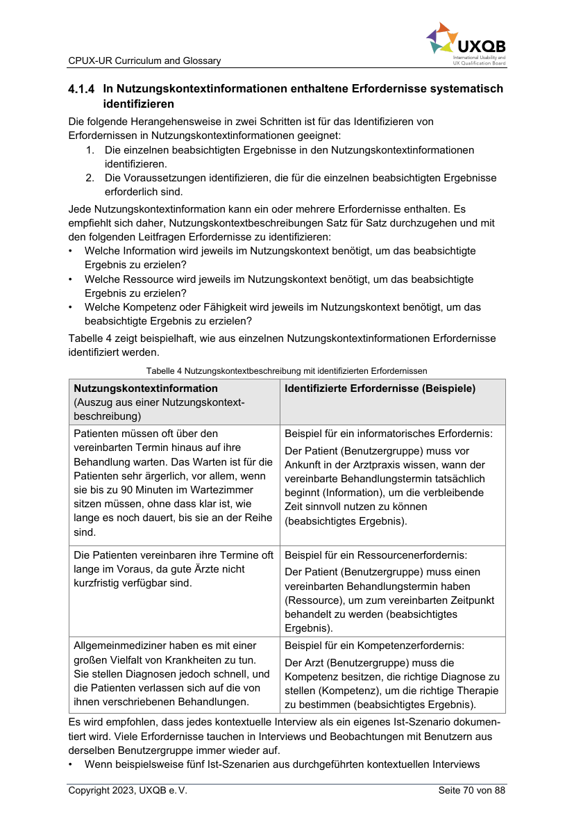
Der Patient (Benutzergruppe) muss vor
Behandlung warten. Das Warten ist für die
Ankunft in der Arztpraxis wissen, wann der
Patienten sehr ärgerlich, vor allem, wenn
vereinbarte Behandlungstermin tatsächlich
sie bis zu 90 Minuten im Wartezimmer
beginnt (Information), um die verbleibende
sitzen müssen, ohne dass klar ist, wie
Zeit sinnvoll nutzen zu können
lange es noch dauert, bis sie an der Reihe
(beabsichtigtes Ergebnis).
sind.
Die Patienten vereinbaren ihre Termine oft Beispiel für ein Ressourcenerfordernis: lange im Voraus, da gute Ärzte nicht
Der Patient (Benutzergruppe) muss einen
kurzfristig verfügbar sind.
vereinbarten Behandlungstermin haben (Ressource), um zum vereinbarten Zeitpunkt behandelt zu werden (beabsichtigtes Ergebnis).
Allgemeinmediziner haben es mit einer Beispiel für ein Kompetenzerfordernis: großen Vielfalt von Krankheiten zu tun.
Der Arzt (Benutzergruppe) muss die
Sie stellen Diagnosen jedoch schnell, und
Kompetenz besitzen, die richtige Diagnose zu
die Patienten verlassen sich auf die von
stellen (Kompetenz), um die richtige Therapie
ihnen verschriebenen Behandlungen.
zu bestimmen (beabsichtigtes Ergebnis).
Es wird empfohlen, dass jedes kontextuelle Interview als ein eigenes Ist-Szenario dokumentiert wird. Viele Erfordernisse tauchen in Interviews und Beobachtungen mit Benutzern aus derselben Benutzergruppe immer wieder auf.
(innerhalb einer Benutzergruppe) ausgewertet werden, beträgt die Schnittmenge der identifizierten Erfordernisse oft über 50%.
Die obige Vorgehensweise kann auch für zusammengefasste Ist-Szenarien über einzelne kontextuelle Interviews oder Beobachtungen hinweg angewendet werden. Große Mengen an Erfordernissen lassen sich nach den vom interaktiven System zu unterstützenden Aufgaben sortieren.
Um Querverweise und die Rückverfolgung von Nutzungskontextinformationen zu ermöglichen, wird empfohlen, für die einzelnen Erfordernisse eindeutige Kennungen zu verwenden.
Beispiel für ein Erfordernis mit eindeutiger Kennung:
Es können auch andere Namenskonventionen verwendet werden, wenn diese geeignet sind.
Aus organisatorischen Anforderungen können weitere Erfordernisse abgeleitet werden, sofern diese sich auf die Benutzer beziehen.
Beispiel für eine organisatorische Anforderung:
Beispiel eines Erfordernisses, das sich aus einer organisatorischen Anforderung für die Benutzergruppe „Vertriebsmitarbeiter” ergibt:
Forderungen werden häufig als gewünschte Lösungen für das interaktiven System formuliert, basieren aber nicht unbedingt auf Erfordernissen des Nutzungskontexts
In kontextuellen Interviews kann durch Nachfragen festgestellt werden, ob hinter einer Forderung Erfordernisse des Nutzungskontexts stecken oder ob die Forderung auf rein subjektiven Einstellungen und Präferenzen des Benutzers beruht, die sich nicht notwendigerweise für die Produktgestaltung verallgemeinern lassen.
Erfordernisse sind die einzige direkte Quelle für Nutzungsanforderungen. Jede Nutzungsanforderung kann auf ein oder mehrere Erfordernisse zurückgeführt werden. Die Erfordernisse begründen also die Nutzungsanforderungen.
Zur Ableitung qualitativer Nutzungsanforderungen aus Erfordernissen muss jedes Erfordernis anhand von drei Leitfragen untersucht werden:
Es ist wichtig, dass bei der Formulierung von Nutzungsanforderungen eine konsistente Formulierung verwendet wird, um sicherzustellen, dass sie klar und eindeutig sind und gut kommuniziert werden können.
Was eine qualitative und eine quantitative Nutzungsanforderung mindestens enthalten muss, ist in Abschnitt 5.1.1 beschrieben.
Bei der Ableitung von Nutzungsanforderungen aus Erfordernissen können widersprüchliche Erfordernisse auftauchen. Um solche Konflikte aufzulösen, müssen Kompromisse gefunden werden. Diese Kompromisse können in den Nutzungsanforderungen oder in den aus den Nutzungsanforderungen abgeleiteten Lösungen detailliert beschrieben werden.
Gütekriterien, die sowohl für qualitative Nutzungsanforderungen als auch für quantitative Nutzungsanforderungen gelten, sind:
Spezifische Gütekriterien für qualitative Nutzungsanforderungen sind:
Spezifische Gütekriterien für quantitative Nutzungsanforderungen sind:
Mit den folgenden Leitfragen lassen sich aus jedem Erfordernis qualitative Nutzungsanforderungen ableiten:
Tabelle 5 zeigt beispielhaft, wie Erfordernisse in Nutzungsanforderungen überführt werden können.
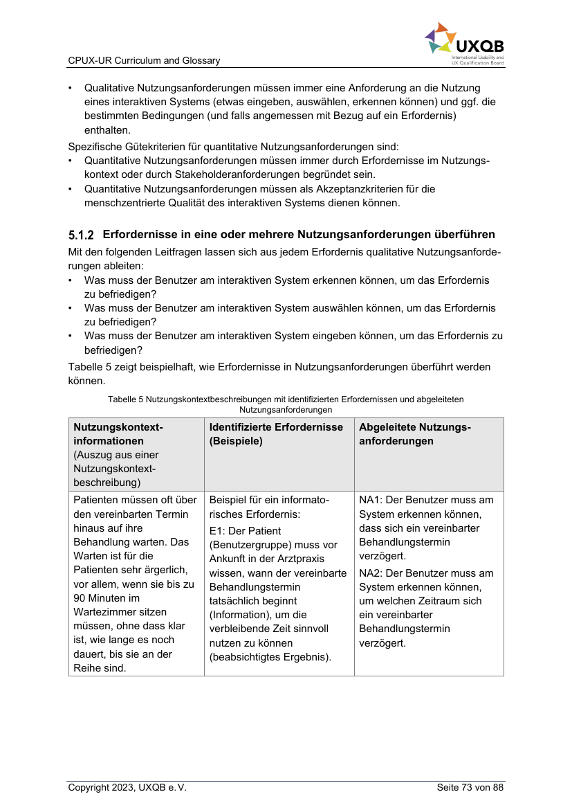
E1: Der Patient
Behandlung warten. Das Behandlungstermin
(Benutzergruppe) muss vor
Warten ist für die verzögert.
Ankunft in der Arztpraxis
Patienten sehr ärgerlich,
wissen, wann der vereinbarte NA2: Der Benutzer muss am
vor allem, wenn sie bis zu
Behandlungstermin System erkennen können,
90 Minuten im
tatsächlich beginnt um welchen Zeitraum sich
Wartezimmer sitzen
(Information), um die ein vereinbarter
müssen, ohne dass klar
verbleibende Zeit sinnvoll Behandlungstermin
ist, wie lange es noch
nutzen zu können verzögert.
dauert, bis sie an der
(beabsichtigtes Ergebnis).
Reihe sind.
E2: Der Patient (Benutzer-
nicht kurzfristig verfügbar verfügbar sind.
gruppe) muss einen
sind.
Behandlungstermin haben NA2: Der Benutzer muss am (Ressource), um zum System einen Behandlungsvereinbarten Zeitpunkt termin auswählen können. behandelt zu werden (beabsichtigtes Ergebnis).
Folgende Syntaxregel kann für das Formulieren von qualitativen Nutzungsanforderungen
angewendet werden.
Syntaxregel:
Der Benutzer muss am System eine <Information oder Ressource> erkennen/auswählen/eingeben können unter <Bedingung (optional)>.
Beispiele:
Um Querverweise und die Rückverfolgung zu Erfordernissen und Nutzungskontextinformationen zu ermöglichen, wird empfohlen, für die einzelnen Nutzungsanforderungen eindeutige Kennungen zu verwenden, wie zuvor für Erfordernisse empfohlen.
Beispiel für eine Nutzungsanforderung mit eindeutiger Kennung:
Quantitative Nutzungsanforderungen können unter Berücksichtigung der folgenden Elemente formuliert werden:
Beispiel: 95% der Benutzer des Intranets müssen an ihrem üblichen Arbeitsplatz unabhängig von der aktuell ausgeführten Anwendung in der Lage sein, innerhalb von zehn Sekunden das Reisekostenformular aufzurufen.
Es kann schwierig oder unmöglich sein, verschiedene Ziele gleichzeitig zu erreichen, wenn sie sich wechselseitig ausschließen.
Solche Widersprüche können bei den Erfordernissen der gleichen Benutzergruppe auftreten.
Beispiel:
Widersprüche bei den Erfordernissen können auch bei den Erfordernissen verschiedener Benutzergruppen auftreten.
Beispiel:
Wenn in der Anforderungsphase keine Lösung für sich widersprechende Erfordernisse gefunden werden kann, sollten Anforderungen für alle Erfordernisse formuliert werden, und es sollte ein Kompromiss innerhalb des Lösungsraums auf der Grundlage alternativer Lösungsentwürfe gesucht werden.
Beispiel für eine organisatorische Lösung zu obigen Erfordernissen: Für die Behandlung von Notfallpatienten ist (organisatorisch) ärztliches Personal reserviert, das nicht für vereinbarte Behandlungstermine mit normalen Patienten eingesetzt werden kann. Somit ist sichergestellt, dass Notfallpatienten sofort behandelt werden können.
Die aus den Erfordernissen abgeleiteten Nutzungsanforderungen werden entlang der Aufgaben und Teilaufgaben strukturiert. Die Aufgaben und Teilaufgaben werden durch Umsetzung der Nutzungsanforderungen effektiv und effizient unterstützt. Das Aufgabenmodell des gegenwärtigen Nutzungskontexts wird sich angesichts der abgeleiteten Nutzungsanforderungen wahrscheinlich noch ändern. Einige Teilaufgaben werden möglicherweise automatisch vom System erledigt, während andere Teilaufgaben je nach verwendeter Technologie neu sein können. Das Aufgabenmodell für die Gestaltung wird aus der angepassten Struktur der einzelnen Aufgaben mit ihren Teilaufgaben gebildet.
Die nach Aufgaben und Teilaufgaben strukturierten Nutzungsanforderungen helfen dem Projektteam, sich auf die Aufgaben der Benutzer zu konzentrieren, die durch das interaktive System unterstützt werden müssen, anstatt auf eine unstrukturierte Liste von Funktionen unabhängig von der Aufgabe.
Die zu unterstützenden Aufgaben und Teilaufgaben werden identifiziert:
Beispiel: Aufgabenmodell für die Gestaltung
Aufgabe: Die Fenster des Bewohners putzen.
Kontextuelle Vorbedingung: Der Bewohner hält seine Fenster für so schmutzig,
dass er sich nicht traut, Freunde einzuladen.
Beabsichtigtes Ergebnis: Der Bewohner betrachtet seine Fenster als sauber. (kontextuelle Nachbedingung)
Teilaufgaben entlang der Phasen der Aufgabenerledigung:
Planen
Vorbereiten
Durchführen
Ergebnis bewerten
Ergebnis weitergeben
Vorgehensweise:
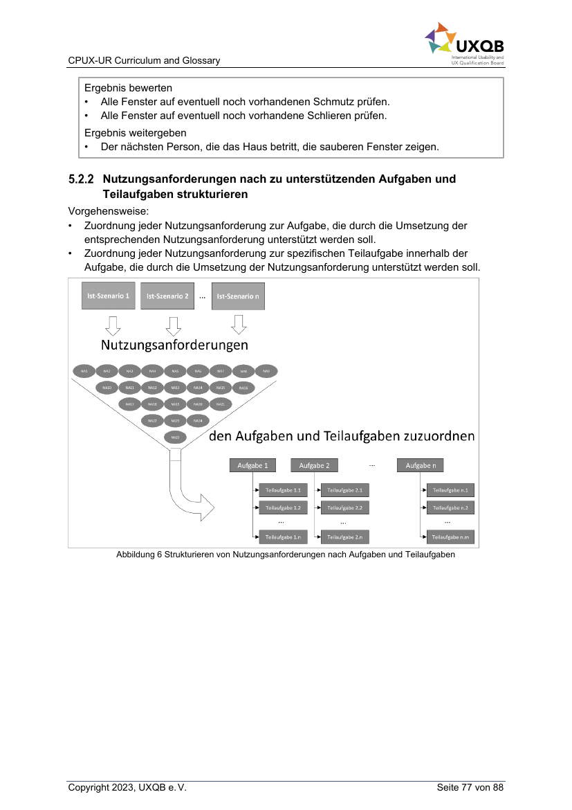
Beispiel: Aufgabenmodell für die Gestaltung mit zugeordneten Nutzungsanforderungen
Aufgabe Die Fenster des Bewohners putzen.
Kontextuelle Der Bewohner hält seine Fenster für so schmutzig, Vorbedingung(en) dass er sich nicht traut, Freunde einzuladen.
Beabsichtigtes Ergebnis Der Bewohner betrachtet seine Fenster als sauber. (kontextuelle Nachbedingung(en))
Teilaufgaben und Nutzungsanforderungen: 1. Entscheiden, wann die Fenster geputzt werden sollen.
NA1: Der Benutzer muss am System erkennen können, dass seine Fenster gereinigt werden müssen.
2. Entscheiden, wer die Fenster putzen soll. 3. Den Reinigungsroboter mit Wasser und Reinigungsmittel füllen.
NA2: Der Benutzer muss am System zu erkennen können, dass Wasser und Reinigungsmittel nachgefüllt werden müssen.
4. Den Reinigungsroboter positionieren.
NA3: Der Benutzer muss am System erkennen können, an welcher Position er den Reinigungsprozess starten muss.
NA4: Der Benutzer muss am System die Startposition für den Reinigungsroboter auswählen können.
5. Den Reinigungsvorgang beobachten.
NA5: Der Benutzer muss am System erkennen können, wie viel Zeit bis zum Ende des Reinigungsvorgangs verbleibt.
NA6: Der Benutzer muss am System erkennen können, dass der Reinigungsvorgang beendet ist.
6. Alle Fenster auf eventuell noch vorhandenen Schmutz prüfen. 7. Alle Fenster auf eventuell noch vorhandene Schlieren prüfen. 8. Der nächsten Person, die das Haus betritt, die sauberen Fenster zeigen.
Nach Ableitung der Nutzungsanforderungen und deren Strukturierung in Aufgaben und Teilaufgaben, sollten diese gemeinsam mit Benutzern überprüft werden, um festzustellen, ob die einzelnen Nutzungsanforderungen angemessen, vollständig und für Benutzer relevant sind oder nicht.
Nicht jede Nutzungsanforderung ist für die Benutzer gleich relevant, und Entscheidungen über die Umsetzungspriorität sollten auf der Relevanz der einzelnen Nutzungsanforderungen beruhen.
Strukturierte Schemata helfen den Benutzern, die Relevanz der einzelnen Nutzungsanforderungen systematisch einzustufen. Ein weit verbreitetes Schema ist das Kano-Schema.
Es ist hilfreich, Workshops mit Benutzern des Systems durchzuführen, um sicherzustellen, dass die Nutzungsanforderungen angemessen und vollständig sind, und um die einzelnen Nutzungsanforderungen entsprechend ihrer Relevanz einzustufen. Die überprüften und nach Relevanz geordneten Nutzungsanforderungen bilden die Grundlage für die Festlegung der Umsetzungspriorität der einzelnen Nutzungsanforderungen innerhalb eines bestimmten Zeitraums.
Es sollten Konsolidierungsworkshops mit Benutzern aus verschiedenen Benutzergruppen durchgeführt werden, um die Richtigkeit, Vollständigkeit und Relevanz von spezifizierten Nutzungsanforderungen aus Benutzersicht zu untersuchen.
Zur Einstufung der Relevanz von Nutzungsanforderungen können strukturierte Schemata verwendet werden. Auch wenn strukturierte Schemata von User Experience Professionals im Projektteam entwickelt werden können, empfiehlt sich die Verwendung publizierter Schemata, wie z.B. das Kano-Schema, da diese erprobt und mit hoher Wahrscheinlichkeit konsensfähig sind.
Im Kano-Schema werden Anforderungen oder Funktionen durch potenzielle Benutzer in die folgenden Kategorien einordnet: 1. Das würde mich sehr freuen. 2. Das setze ich voraus. 3. Das ist mir egal. 4. Das nehme ich gerade noch hin. 5. Das würde mich sehr stören.
Für jede Anforderung werden zwei Fragen gestellt. Zunächst wird die Person gefragt, wie sie es findet, wenn die Anforderung umgesetzt würde. Dann wird sie gefragt, wie sie es findet, wenn die Anforderung nicht umgesetzt würde.
Die Kombination beider Antworten ermöglicht die Einstufung der Anforderungen in eine der folgenden Kategorien:
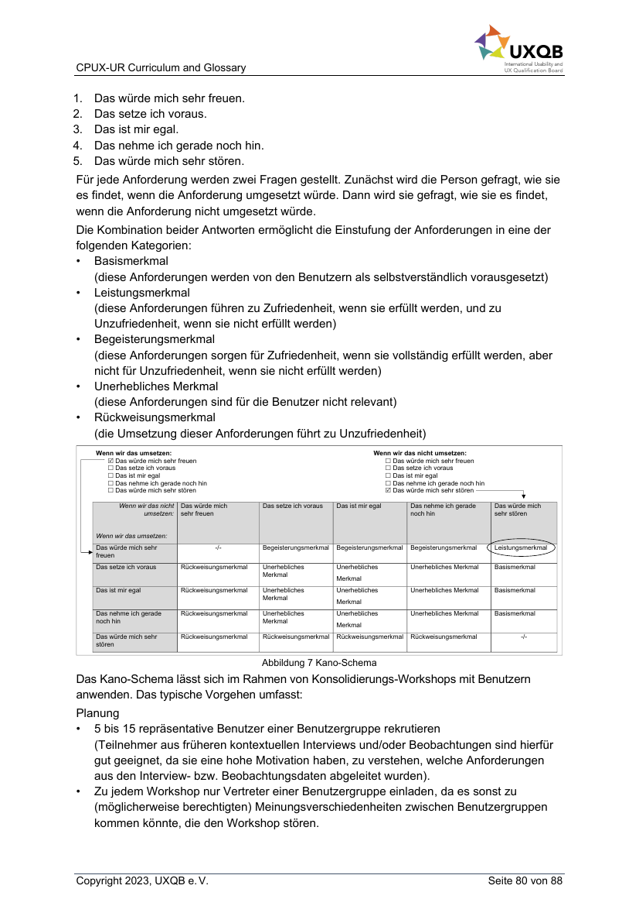
Das Kano-Schema lässt sich im Rahmen von Konsolidierungs-Workshops mit Benutzern anwenden. Das typische Vorgehen umfasst:
Planung
Einleitung
Durchführung
Abschluss
Nachdem der Satz von Nutzungsanforderungen für das interaktive System mit den Benutzern überprüft wurde, muss das Projektteam über die Umsetzungspriorität jeder einzelnen Nutzungsanforderung entscheiden. Hierbei wird neben den geschätzten Kosten auch die Relevanz der einzelnen Nutzungsanforderungen für die Benutzer berücksichtigt. Es ist von entscheidender Bedeutung, den Stakeholdern und dem Projektteam die Nutzungsanforderungen zu kommunizieren, um deren Relevanz für die Benutzer im Hinblick auf Effektivität, Effizienz und Zufriedenheit hervorzuheben. Nutzungsanforderungen, die nicht sofort umgesetzt werden können, sollten in eine Produkt-Roadmap aufgenommen werden, die festlegt, was zu gegebener Zeit in verschiedenen Versionen umgesetzt werden soll.
Es ist sicherzustellen, dass eine Priorisierung der Nutzungsanforderungen durch die Projektbeteiligten erfolgt, die den Zeitpunkt ihrer Umsetzung bestimmt., da typischerweise nicht alle Nutzungsanforderungen im Gleichen Zeitrahmen umgesetzt werden können. So lassen sich durch eine zeitliche Priorisierung Umsetzungskonflikte zu vermeiden.
Es liegt in der Verantwortung derjenigen, die Nutzungsanforderungen ableiten, den Projektbeteiligten zu erklären, wie wichtig die Umsetzung der Nutzungsanforderungen für die menschzentrierte Qualität eines interaktiven Systems ist. Eine umfassende Kommunikation ist unerlässlich, um die Beteiligten von der Wichtigkeit der Umsetzung der Nutzungsanforderungen zu überzeugen. Ebenso wichtig ist es, die Konsequenzen einer Nichtumsetzung von Nutzungsanforderungen, die von Benutzern hoch priorisiert wurden, zu kommunizieren.
Oft können nicht alle Nutzungsanforderungen im gleichen Zeitrahmen oder einige aus Kostengründen möglicherweise gar nicht umgesetzt werden. Daher müssen die Anforderungen priorisiert werden.
Eine Priorisierung sollte immer zunächst in Hinblick auf die menschzentrierten Qualitätsziele vorgenommen werden (Wie relevant ist die Umsetzung der Anforderung in Hinblick auf die Benutzer?) und erst dann in Hinblick auf weitere Stakeholder. Für eine Priorisierung in Hinblick auf die Benutzer eignet sich die Nutzung des Kano-Schemas.
Ein typisches Priorisierungsschema für die Umsetzung von Anforderungen ist:
Anforderungen, die nicht in der aktuell fertigzustellenden Produktversion umsetzbar sind, werden in die Produkt-Roadmap aufgenommen.
Produkt-Roadmaps dienen der Kommunikation zwischen Disziplinen (Produktmanagement, Requirements Engineering, Systems Engineering) aber auch zum Management hin, um so ein gemeinsames Verständnis für die langfristige Produktplanung und den damit verbundenen Aktivitäten zu schaffen.
(45 min)
1 10:45-11:30 1.2 Stakeholderanforderungen und Interaktiver Vortrag
Systemanforderungen unterscheiden (45 min)
1 11:30-11:45 Pause
1 11:45-12:30 1.3 Der Nutzungskontext als Grundlage für Interaktiver Vortrag
Nutzungsanforderungen (45 min)
1 12:30-13:15 1.4 Nutzungsanforderungen als eigene Interaktiver Vortrag
Anforderungskategorie innerhalb der (45 min) Stakeholderanforderungen
1 13:15-14:15 Pause
1 14:15-15:00 1.4 Nutzungsanforderungen als eigene Übung zu 1.4
Anforderungskategorie innerhalb der (45 min) Stakeholderanforderungen
1 15:00-15:30 2.1 Anlass und Ziele der Nutzungskontextanalyse Interaktiver Vortrag
ermitteln (30 min)
1 15:30-15:45 Pause
1 15:45-16:45 2.2 Das Vorgehen bei der Nutzungskontextanalyse Interaktiver Vortrag
festlegen (60 min)
1 16:45-17:30 3.1 Benutzer für die Erhebung von Interaktiver Vortrag
Nutzungskontextinformationen auswählen und (45 min) rekrutieren
Ende Tag 1
textinformationen vorbereiten und durchführen (45 min)
2 09.45-10.15 Fragen für kontextuelle Interviews entwickeln Übung 1 zu 3.2
(30 min)
2 10.15-11.15 Ein kontextuelles Interview durchführen Übung 2 zu 3.2
(60 min)
2 11:15-11:30 Pause
2 11:30-12:15 3.3 Nutzungskontextbeschreibungen basierend auf Interaktiver Vortrag
Nutzungskontextinformationen erstellen (45 min)
2 12:15-12:35 4.1 Erfordernisse systematisch identifizieren und Interaktiver Vortrag
formulieren (20 min)
2 12:35-13:00 5.1 Erfordernisse gezielt in Nutzungsanforderungen Interaktiver Vortrag
überführen (25 min)
2 13:00-14:00 Pause
2 14:00-15:30 Erfordernisse gezielt identifizieren und formulieren, Gruppenübung zu
und Erfordernisse gezielt in Nutzungs-4.1 und 5.1 anforderungen überführen (90 min)
2 15:30-15:45 Pause
2 15:45-16:15 Ein kontextuelles Interview in Form eines Ist-Übung 1 zu 4.1
Szenarios dokumentieren
2 16:15-17.15 Erfordernisse gezielt identifizieren und formulieren Übung 2 zu 4.1
Ende Tag 2
09.00-10.30 Erfordernisse gezielt in Nutzungsanforderungen Übung zu 5.1
überführen (90 min)
3 10:30-10:45 Pause
3 10.45-11.30 5.2 Nutzungsanforderungen angemessen Interaktiver Vortrag
strukturieren (45 min)
3 11.30-12.15 Nutzungsanforderungen angemessen strukturieren Übung zu 5.2
(45 min)
3 12:15-13:15 Pause
3 13.15-14.00 6.1 Nutzungsanforderungen mit Benutzern Interaktiver Vortrag
konsolidieren und priorisieren (45 min)
3 14.00-14.45 6.2 Die Umsetzungspriorität von Interaktiver Vortrag
Nutzungsanforderungen mit Projektbeteiligten (45 min) festlegen
3 14:45-15:00 Pause
3 15:00-17:00 Vorbereitung auf die CPUX-UR Prüfung Übung
(120 min)
3 Ende Tag 3 -/-
Die Übersicht finden Sie in der englischsprachigen Ausgabe des CPUX-UR Curriculums.
Beyer, H. and Holtzblatt, K. (1998). Contextual Design. Defining Customer-Centered Systems
(Morgan Kaufmann Series in Interactive Technologies). San Francisco: Morgan Kaufmann.
Brown, T. and Katz, B. (2009). Change by design: How Design Thinking transforms organizations
and inspires innovation. New York: HarperCollins.
Constantine, L. (2009). Model-driven Inquiry - A Streamlined Approach to Data Collection. User
Experience, Volume 8, Issue 3, 3 Quarter 2009.
Cooper, A. and Reimann, R. and Cronin, D. and Noessel, C. (2014). About Face: The Essentials
of Interaction Design. 4th Edition. New York: John Wiley & Sons, 2014.
Deutsche Akkreditierungsstelle GmbH (DAkkS) (2010). Leitfaden Usability. [online] Available
at https://www.dakks.de/files/Dokumentensuche/Dateien/71%20SD%202%20007%20A1_L eitfaden%20Usability%201.3_zur%C3%BCckgezogen%20am%2020.01.2020.pdf
Geis, T. and Dzida, W. and Redtenbacher, W. (2004). Specifying usability requirements and test
criteria for interactive systems. Germany: Federal Institute for Occupational Safety and Health.
Geis, T. and Polkehn, K. (2018). Praxiswissen User Requirements. dpunkt Verlag Dzida, W. and Freitag, R. (1998). Making use of scenarios for validating analysis and design.
IEEE Transactions on Software Engineering, Volume 24, Issue 12.
Gothelf, J. and Seiden, J. (2012). Lean UX: Applying Lean Principles to Improve User
Experience. O'Reilly and Associates.
Hackos, J. and Redish, J. (1998). User and Task Analysis for Interface Design. Chichester: Wiley. Hartson, R. and Pyla, P. (2012). The UX Book: Process and guidelines for ensuring a quality user
experience. Morgan Kaufmann.
International Organization for Standardization (ISO) (2010) ISO 9241-210: 2010. Ergonomics of
human-system interaction - Human-centred design for interactive systems. International Organization for Standardization (ISO).
International Organization for Standardization (ISO) (2011) ISO/IEC 25010:2011. System and
software quality models. International Organization for Standardization (ISO).
International Organization for Standardization (ISO) (2014) ISO/IEC 25063:2014. Common
Industry Format (CIF) for usability: Context of use description. International Organization for Standardization (ISO).
International Organization for Standardization (ISO) (2013) ISO/IEC 25064:2013. Common
Industry Format (CIF) for usability: User needs report. International Organization for Standardization (ISO).
International Organization for Standardization (ISO) (2013) ISO 25065:2019. Common Industry
Format (CIF) for usability: User requirements specification. International Organization for Standardization (ISO).
Riedemann, C. and Freitag, R. (2009). Modeling usage: Techniques and Tools. IEEE
Transactions on Software Engineering, Volume 26, Issue 2.
Rosson, M. and Carroll, J. M. (2002). Usability Engineering: Scenario-Based Development of
Human-Computer Interaction (Morgan Kaufmann Series in Interactive Technologies).
Van der Veer, G. C. (1994). Mental Models of Computer Systems: Visual Languages in the Mind.
In: Tauber, M. and Mahling, D. and Arefi, F., ed., Cognitive Aspects of Visual Languages and Visual Interfaces. Amsterdam London New York Tokyo: North-Holland, pp. 3 ff.
Young, I. (2008). Mental Models. Aligning Design Strategy with Human Behavior. New York:
Rosenfeld Media.
Affinity-Diagramm 64 Klassische Persona 62 Anforderung 14 Nutzungskontextanalyse Primärer Benutzer 19
39
Aufgabe 25 Priorisierung 82
Kompetenzerfordernis 67
Aufgabenmodell 28 Problemraum 16
Konstruierte Information
Aufgabenmodell für die Produkt-Roadmap 82
38
Gestaltung 29 Protokollant 48
Kontextuelles Interview 48
Aufgabenobjekt 30 Qualität 12
Lean UX 41
Benutzer 19 Qualitative
Lösung 15
Benutzergruppe 43 Nutzungsanforderung
Lösungsraum 16 33
Benutzergruppenprofil 43
Marktanforderung 21
Benutzerwunsch 15 Quantitative
Meister-Schüler-Modell 46 Nutzungsanforderung
Beobachter 54
Menschzentrierte 34
Beobachtung 52
Gestaltung 12 Rekrutierungsfragebogen
CPRE 23
Menschzentrierte Qualität 44
Cultural Probe 47
13 Ressource 26
Design Thinking 42
Menschzentrierte Ressourcenerfordernis 66
Empirische Information 38
Qualitätsziele 35 Risiko 13
Erfordernis 14
Mentales Modell (eines Sekundärer Benutzer 19
Fachliche Anforderung 21
Benutzers) 57
Sponsor 20
Fokusgruppe 54
Modellbasierte
Stakeholderanforderung
Forderung 15
Nutzungskontextanalyse
20
Geschlossene Frage 49 40
Suggestivfrage 49
Gesetzliche/regulatorische Moderator 47
Systemanforderung 22
Anforderung 20
Neutrale Frage 49
Tagebuchstudie 47
Gestaltungsregel 16
Nutzungskontext 14
Technische Qualität 13
Immunisierungsfalle 16
Nutzungskontext für die
Teilaufgabe 27
Indirekter Benutzer 20 Gestaltung 31
Umgebung 26
Informatorisches Nutzungskontextanalyse
User Journey Map 64
Erfordernis 66 38
User Research 39
Interaktives System 12 Nutzungskontextbeschreib
Validierung 22
Interessenvertreter 19 ung 60
Verifizierung 22
Interview 48 Nutzungskontextinformatio
n 38 Vermeidung von Schäden
Interviewleitfaden 50
durch die Benutzung 13
Offene Frage 48
IREB 23
Ziel 25
Organisatorische
Ist-Szenario 62
Zielkatalog 64
Anforderung 21
Kano-Schema 78